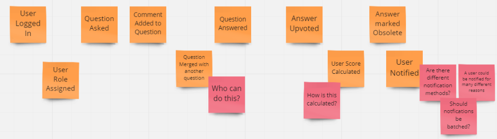
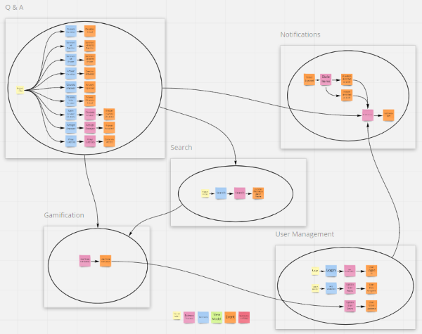

Tag: coding-practices
Understanding the ID Entanglement Effect
Posted by bsstahl on 2025-02-01 and Filed Under: development
Every developer has faced it: the temptation to make identifiers "smarter" by embedding information. A customer ID that includes their region, an order number containing the date, a product code that encodes its category - these patterns appear innocent at first, even helpful. But they hide a subtle trap I call the "ID Entanglement Effect" - a cascade of complexity that emerges when identifiers become intertwined with business logic and mutable state.
This effect manifests when we blur the line between identification and information, creating a web of dependencies that grows increasingly difficult to maintain. What starts as a convenient shortcut often evolves into a significant source of technical debt, affecting everything from system flexibility to data integrity.
Critical Characteristics
Structural Dependency
Systems relying on a specific format for composite IDs become fragile. Any format change can disrupt functionality and complicate maintenance. For instance, if a system uses "DEPT-EMP-123" as an employee ID, changing the department code structure creates a difficult choice: either update all systems and databases that use this format (a risky and potentially expensive undertaking), or abandon the standard for new records while keeping old IDs in the legacy format. The latter option results in inconsistent IDs across the system where some follow the old standard and others follow the new one, effectively creating a partial, incomplete, and incorrect standard within the IDs themselves. This inconsistency further complicates maintenance and can lead to confusion and errors in data processing.
Data Parsing
When information is embedded in composite IDs, parsing them often appears to be the simplest solution - and it's a completely understandable choice when the data is readily available in the ID itself. Consider an order ID like "2024-01-NA-12345" containing year, region, and sequence number information. Using this embedded data seems more straightforward than querying additional fields or services. However, this parsing must be replicated across different applications and languages, increasing the risk of inconsistencies and errors. The only way to be sure we don't end up parsing these IDs, and in doing so bringing the ID Entanglement Effect into play, is to avoid creating systems that embed business data in identifiers in the first place.
Maintenance Complexity
Parsing logic embedded throughout the codebase increases complexity, making debugging and future development challenging. For example, if an order ID contains both a date and location code (like "20240129-PHX-1234"), every service that processes orders must implement and maintain the same parsing logic. When this logic needs to change, such as adding a new location format, developers must update and test the parsing code across multiple codebases, increasing the risk of inconsistencies.
Inflexibility
Composite IDs limit adaptability. Modifications can ripple through the system, complicating changes or scaling. For example, if a product ID includes a category code (like "TECH-LAPTOP-123"), adding new product categories or reorganizing the category hierarchy becomes a major undertaking. Similarly, if a customer ID includes a region code ("US-WEST-789"), business expansion to new regions or changes in regional organization can require extensive system updates.
Data Integrity Risks
Parsing composite IDs can lead to inconsistencies, especially in dynamic environments. Consider a system where we create product IDs by combining our supplier code with a sequence number (like "SUP123-WIDGET-456"). If the supplier's business is acquired and rebranded, or if the product's manufacturing moves to a different supplier, should all related IDs be updated? This creates significant challenges: either maintain increasingly inaccurate IDs, implement complex ID migration processes, or risk breaking existing references across the system.
Note that using a manufacturer's actual part number (like "ACME-WIDGET-123") as an opaque identifier is perfectly fine - the key is that we treat it as an unchanging reference and don't try to parse meaning from its structure. The ID Entanglement Effect occurs when we create our own composite IDs that encode business relationships or mutable state that we expect to parse and interpret later.
Security Vulnerabilities
Auto-incrementing integers, while simple, introduce significant security risks. Their predictable nature makes it easy for attackers to enumerate resources (like guessing user IDs to access profiles) or gather business intelligence (such as order volumes from sequential order numbers). They can also lead to race conditions in high-concurrency systems and make it difficult to merge data from different sources without ID conflicts.
Long-Term Impact
The ID Entanglement Effect compounds over time, creating increasingly complex challenges:
- Technical Debt: As systems evolve, the cost of maintaining and updating composite ID logic grows exponentially
- Integration Barriers: New systems and third-party integrations must implement complex parsing logic
- Performance Overhead: Constant parsing and validation of composite IDs impacts system performance
- Error Propagation: Mistakes in ID parsing can cascade through multiple systems
- Documentation Burden: Teams must maintain detailed documentation about ID formats and parsing rules
Prevention Strategies
To avoid the ID Entanglement Effect, consider these key strategies:
Use Clean, Stable Identifiers
- Treat all identifiers, especially those from external systems, as opaque strings whose sole purpose is to establish equivalence through exact matching. This is crucial because:
- It prevents accidental coupling to internal structures or business logic that may be embedded in the ID
- It ensures the system remains resilient to changes in ID format or structure
- It maintains compatibility with different ID generation schemes across systems
- It avoids assumptions about ID content that could break when integrating with new systems
- Generate unique identifiers that remain consistent over time
- Human-readable identifiers (like "ORDER-12345") are perfectly acceptable
- Avoid encoding mutable data or business logic in the identifier
- Use non-sequential identifiers (like UUIDs) to prevent enumeration attacks
- Consider the security implications of identifier patterns
Maintain Clear Boundaries
- Store business data in proper fields, not in the identifier
- Keep temporal data (dates, versions) in dedicated attributes
- Track status and metadata independently of the ID
Design for Change
- Assume business rules and categories will evolve
- Plan for system growth and new use cases
- Consider future integration requirements
Best Practices
When designing identifier systems:
- Keep IDs Clean: Use straightforward identifiers that don't encode mutable data
- Separate Concerns: Store business data, status, and metadata in dedicated fields
- Plan for Scale: Choose identifier formats that support future growth
- Consider Relations: Use proper database relationships instead of encoding hierarchies in IDs
- Document Clearly: Maintain clear documentation about identifier generation and usage
Conclusion
The ID Entanglement Effect represents a significant challenge in system design, where the convenience of composite IDs leads to long-term maintenance and scalability issues. By understanding these risks and following best practices for identifier design, teams can create more maintainable and adaptable systems. Remember: while identifiers can be human-readable, they should never become entangled with business logic or mutable state - this separation is key to maintaining system flexibility and reliability over time.
Tags: antipattern architecture coding-practices coupling flexibility
Feature Flags: Don't Roll Your Own
Posted by bsstahl on 2023-08-14 and Filed Under: development
In my previous post, I discussed situations where we tend to overvalue visible costs and undervalue more hidden costs. One example of this dynamic is the tendency to want to roll-your-own feature-flagging system.
Feature flags are a powerful tool for controlling the availability and behavior of features in your software. They allow you to turn features on or off at runtime, without deploying new code, and target specific segments of users with different variations of your features. This enables you to experiment, test, and release features faster and safer than ever before.
But feature flags are not something you should implement yourself. Rolling your own feature flags may seem like a simple and cost-effective solution, but it comes with many hidden pitfalls and risks that can undermine your software quality, performance, security, and maintainability. Ultimately, rolling your own feature flag system may end up costing you much more than using an existing product.
We should always have a strong bias against building anything that falls outside of our team's core competencies, but feature flags in particular have their own special set of concerns, especially since, on the surface, it seems like such a simple problem.
Here are some of the specific reasons why you should avoid rolling your own feature flags:
Complexity: Implementing feature flags requires more than just adding some if statements to your code. You need to design a robust system for managing, storing, updating, evaluating, and auditing your feature flags across different environments, platforms, services, and teams. You also need to handle edge cases such as flag dependencies, conflicts, defaults, fallbacks, rollbacks, etc. This adds a lot of complexity and overhead to your codebase that can introduce bugs, errors, inconsistencies, and technical debt.
Performance: Evaluating feature flags at runtime can have a significant impact on your application's performance if not done properly. You need to ensure that your feature flag system is fast, scalable, reliable, resilient, and secure. You also need to optimize your flag evaluation logic for minimal latency and resource consumption. If you roll your own feature flags without proper performance testing and monitoring tools, you may end up slowing down or crashing your application due to excessive network calls, database queries, memory usage, or CPU cycles.
Security: Feature flags can expose sensitive information or functionality that should not be accessible by unauthorized users or attackers. You need to ensure that your feature flag system is secure from both internal and external threats. You also need to comply with any regulatory or legal requirements for data privacy and protection. If you roll your own feature flags without proper security measures and best practices, you may end up leaking confidential data or compromising your application's integrity.
Maintainability: Feature flags are meant to be temporary switches that enable or disable features until they are ready for full release or removal. However, if you roll your own feature flags without proper management tools and processes, you may end up with a large number of stale or unused flags that clutter or pollute your codebase. This makes it harder to understand or modify your code, increases the risk of errors or conflicts, and reduces the readability or testability of your code.
As you can see, rolling your own feature flags is not as easy as it sounds. It requires a lot of time, effort, skill, and discipline to do it well. And even if you manage that nebulous challenge at rollout, you still have to maintain and extend the system for the life of the products that use it.
That's why you should use a feature flag management platform instead. A feature flag management platform provides you with all the tools and services you need to implement and manage feature flags effectively and efficiently.
With a feature flag management platform:
You can create and update feature flags easily using a user-friendly interface or API.
You can target specific segments of users based on various criteria such as location, device type, user behavior, etc.
You can monitor and measure the impact of your features on key metrics such as conversion rates, engagement levels, error rates, etc.
You can control the rollout speed and strategy of your features using various methods such as percentage-based splits, canary releases, blue-green deployments, etc.
You can integrate with various tools such as CI/CD pipelines, testing frameworks, analytics platforms, etc. to streamline your development and delivery workflows.
You can ensure the performance, security, reliability, scalability, of your feature flag system using advanced techniques such as caching, encryption, failover mechanisms, load balancing, etc.
You can manage the lifecycle of your feature flags using best practices such as naming conventions, documentation, flag retirement policies, etc.
A feature flag management platform takes care of all these aspects for you, so you can focus on building and delivering great features for your customers.
There are many feature flag management platforms available in the market, such as LaunchDarkly, Split, Optimizely, Taplytics, etc. Each platform has its own features, pricing, and integrations that you can compare and choose from based on your needs and preferences.
However, regardless of which platform you use, there are some best practices that you should follow when using feature flags. These best practices will help you avoid common pitfalls and maximize the benefits of feature flags for your software development and delivery process.
Here are some of the best practices that you should know:
Use a consistent system for feature flag management: It doesn't matter if you use a feature flag management tool or a custom solution, as long as you have a consistent system for creating, updating, and deleting your feature flags. You should also have a clear ownership and accountability model for each flag, so that you know who is responsible for what.
Set naming conventions for different types of feature flags: You can implement feature flags to achieve many different goals, such as testing, experimenting, releasing, or hiding features. You should use descriptive and meaningful names for your flags that indicate their purpose and scope. You should also use prefixes or suffixes to distinguish between different types of flags, such as release flags, experiment flags, kill switches, etc.
Make it easy to switch a flag on/off: You should be able to turn a feature flag on or off with minimal effort and delay. You should also be able to override or modify a flag's settings at any time without redeploying your code. This will allow you to react quickly and flexibly to any changes or issues that may arise during your feature development or delivery cycle.
Make feature flag settings visible: You should be able to see and monitor the current state and configuration of each feature flag at any given time. You should also be able to track and audit the history and usage of each flag across different environments, platforms, services, and teams. This will help you ensure transparency and traceability of your feature development and delivery process.
Clean up obsolete flags: You should remove any feature flags that are no longer needed or used as soon as possible. This will prevent cluttering or polluting your codebase with unnecessary or outdated code paths that can increase complexity or introduce errors or conflicts¹⁶.
Some additional recommendations are:
Avoid dependencies between flags: You should avoid creating complex dependencies or interactions between different feature flags that can make it hard to understand or predict their behavior or impact. You should also avoid nesting or chaining multiple flags within each other that can increase latency or resource consumption.
Use feature switches to avoid code branches: You should use simple boolean expressions to evaluate your feature flags rather than creating multiple code branches with if/else statements. This will reduce code duplication and improve readability and testability of your code.
Use feature flags for small test releases: You should use feature flags to release small batches of features incrementally rather than releasing large groups of features altogether. This will allow you to test and validate your features with real users in production without affecting everyone at once. It will also enable you to roll back or fix any issues quickly if something goes wrong.
By following these best practices, you can leverage the power of feature flags without compromising on quality, performance, security, or maintainability.
Some Open Source Feature Flag Systems
Yes, there are some open source projects that support feature flag management. For example:
GrowthBook: GrowthBook is an open source feature management and experimentation platform that helps your engineering team adopt an experimentation culture. It enables you to create gradual or canary releases with user targeting, run A/B tests, track key metrics, and integrate with various data sources.
Flagsmith: Flagsmith is an open source feature flag and remote config service that makes it easy to create and manage features flags across web, mobile, and server side applications. It allows you to control feature access, segment users, toggle features on/off, and customize your app behavior without redeploying your code.
Unleash: Unleash is an open source feature flag management system that helps you deploy new features at high speed. It lets you decouple deployment from release, run experiments easily, scale as your business grows, and integrate with various tools and platforms.
These are just some examples of open source feature flag management projects. There may be others that suit your needs better.
Feature flags are an essential tool for modern software development and delivery. They enable you to deliver faster, safer, and better features for your customers while reducing risk and cost. But don't try to roll your own feature flags unless you have a good reason and enough resources to do so. Instead, use a professional feature flag management platform that provides you with all the tools and services you need to implement and manage feature flags effectively and efficiently.
Disclaimer: My teams use LaunchDarkly for feature-flagging but I am not affiliated with that product or company in any way. I am also not associated with any similar product or company that makes such a product and have not received, nor will I receive, any compensation of any type, either direct or indirect, for this article.
Tags: architecture coding-practices
Consider Quality Before Cost in Application Development
Posted by bsstahl on 2023-08-04 and Filed Under: development
Assessing the costs associated with using a specific tool is usually more straightforward than evaluating the less tangible costs related to an application's life-cycle, such as those tied to quality. This can result in an excessive focus on cost optimization, potentially overshadowing vital factors like reliability and maintainability.
As an example, consider a solution that uses a Cosmos DB instance. It is easy to determine how much it costs to use that resource, since the Azure Portal gives us good estimates up-front, and insights as we go. It is much more difficult to determine how much it would cost to build the same functionality without the use of that Cosmos DB instance, and what the scalability and maintainability impacts of that decision would be.
In this article, we will consider a set of high-level guidelines that can help you identify when to consider costs during the development process. By following these guidelines, you can make it more likely that your dev team accurately prioritizes all aspects of the application without falling into the trap of over-valuing easily measurable costs.
1. Focus on Quality First
As a developer, your primary objective should be to create applications that meet the customers needs with the desired performance, reliability, scalability, and maintainability characteristics. If we can meet a user need using a pre-packaged solution such as Cosmos DB or MongoDB, we should generally do so. While there are some appropriate considerations regarding cost here, the primary focus of the development team should be on quality.
Using Cosmos DB as an example, we can leverage its global distribution, low-latency, and high-throughput capabilities to build applications that cater to a wide range of user needs. If Cosmos DB solves the current problem effectively, we probably shouldn't even consider building without it or an equivalent tool, simply for cost savings. An additional part of that calculus, whether or not we consider the use of that tool a best-practice in our organization, falls under item #2 below.
2. Employ Best Practices and Expert Advice
During the development of an application, it's essential to follow best practices and consult experts to identify areas for improvement or cost-effectiveness without compromising quality. Since most problems fall into a type that has already been solved many times, the ideal circumstance is that there is already a best-practice for solving problems of the type you are currently facing. If your organization has these best-practices or best-of-breed tools identified, there is usually no need to break-out of that box.
In the context of Cosmos DB, you can refer to Microsoft's performance and optimization guidelines or consult with your own DBAs to ensure efficient partitioning, indexing, and query optimization. For instance, you can seek advice on choosing the appropriate partition key to ensure even data distribution and avoid hot-spots. Additionally, you can discuss the optimal indexing policy to balance the trade-off between query performance and indexing cost, and define the best time-to-live (TTL) for data elements that balance the need for historical data against query costs. If you are seeing an uneven distribution of data leading to higher consumption of RU/s, you can look at adjusting the partition key. If you need to query data in several different ways, you might consider using the Materialized View pattern to make the same data queryable using different partitioning strategies. All of these changes however have their own implementation costs, and potentially other costs, that should be considered.
3. Establish Cost Thresholds
Defining acceptable cost limits for different aspects of your application ensures that costs don't spiral out of control while maintaining focus on quality. In the case of Cosmos DB, you can set cost thresholds for throughput (RU/s), storage, and data transfer. For instance, you can define a maximum monthly budget for provisioned throughput based on the expected workload and adjust it as needed. This can help you monitor and control costs without affecting the application's performance. You can also setup alerts to notify you when the costs exceed the defined thresholds, giving you an opportunity to investigate and take corrective action.
Limits can be defined similarly to the way any other SLA is defined, generally by looking at existing systems and determining what normal looks like. This mechanism has the added benefit of treating costs in the same way as other metrics, making it no more or less important than throughput, latency, or uptime.
4. Integrate Cost Checks into Code Reviews and Monitoring
A common strategy for managing costs is to introduce another ceremony specifically related to spend, such as a periodic cost review. Instead of creating another mandated set of meetings that tend to shift the focus away from quality, consider incorporating cost-related checks into your existing code review and monitoring processes, so that cost becomes just one term in the overall equation:
- Code review integration: During code review sessions, include cost-related best practices along with other quality checks. Encourage developers to highlight any potential cost inefficiencies or violations of best practices that may impact the application's costs in the same way as they highlight other risk factors. Look for circumstances where the use of resources is unusual or wasteful.
- Utilize tools for cost analysis: Leverage tools and extensions that can help you analyze and estimate costs within your development environment. For example, you can use Azure Cost Management tools to gain insights into your Cosmos DB usage patterns and costs. Integrating these tools into your development process can help developers become more aware of the cost implications of their code changes, and act in a similar manner to quality analysis tools, making them just another piece of the overall puzzle, instead of a special-case for costs.
- Include cost-related SLOs: As part of your performance monitoring, include cost-related SLIs and SLOs, such as cost per request or cost per user, alongside other important metrics like throughput and latency. This will help you keep an eye on costs without overemphasizing them and ensure they are considered alongside other crucial aspects of your application.
5. Optimize Only When Necessary
If cost inefficiencies are identified during code reviews or monitoring, assess the trade-offs and determine if optimization is necessary without compromising the application's quality. If cost targets are being exceeded by a small amount, and are not climbing rapidly, it may be much cheaper to simply adjust the target. If target costs are being exceeded by an order-of-magnitude, or if they are rising rapidly, that's when it probably makes sense to address the issues. There may be other circumstances where it is apporpriate to prioritize these types of costs, but always be aware that there are costs to making these changes too, and they may not be as obvious as those that are easily measured.
Conclusion
Balancing quality and cost in application development is crucial for building successful applications. By focusing on quality first, employing best practices, establishing cost thresholds, and integrating cost checks into your existing code review and monitoring processes, you can create an environment that considers all costs of application development, without overemphasizing those that are easy to measure.
Tags: architecture coding-practices reliability
Continuing a Conversation on LLMs
Posted by bsstahl on 2023-04-13 and Filed Under: tools
This post is the continuation of a conversation from Mastodon. The thread begins here.
Update: I recently tried to recreate the conversation from the above link and had to work far harder than I would wish to do so. As a result, I add the following GPT summary of the conversation. I have verified this summary and believe it to be an accurate, if oversimplified, representation of the thread.
The thread discusses the value and ethical implications of Language Learning Models (LLMs).
@arthurdoler@mastodon.sandwich.net criticizes the hype around LLMs, arguing that they are often used unethically, or suffer from the same bias and undersampling problems as previous machine learning models. He also questions the value they bring, suggesting they are merely language toys that can't create anything new but only reflect what already exists.
@bsstahl@CognitiveInheritance.com, however, sees potential in LLMs, stating that they can be used to build amazing things when used ethically. He gives an example of how even simple autocomplete tools can help generate new ideas. He also mentions how earlier LLMs like Word2Vec were able to find relationships that humans couldn't. He acknowledges the potential dangers of these tools in the wrong hands, but encourages not to dismiss them entirely.
@jeremybytes@mastodon.sandwich.net brings up concerns about the misuse of LLMs, citing examples of false accusations made by ChatGPT. He points out that people are treating the responses from these models as facts, which they are not designed to provide.
@bsstahl@CognitiveInheritance.com agrees that misuse is a problem but insists that these tools have value and should be used for legitimate purposes. He argues that if ethical developers don't use these tools, they will be left to those who misuse them.
I understand and share your concerns about biased training data in language models like GPT. Bias in these models exists and is a real problem, one I've written about in the past. That post enumerates my belief that it is our responsibility as technologists to understand and work around these biases. I believe we agree in this area. I also suspect that we agree that the loud voices with something to sell are to be ignored, regardless of what they are selling. I hope we also agree that the opinions of these people should not bias our opinions in any direction. That is, just because they are saying it, doesn't make it true or false. They should be ignored, with no attention paid to them whatsoever regarding the truth of any general proposition.
Where we clearly disagree is this: all of these technologies can help create real value for ourselves, our users, and our society.
In some cases, like with crypto currencies, that value may never be realized because the scale that is needed to be successful with it is only available to those who have already proven their desire to fleece the rest of us, and because there is no reasonable way to tell the scammers from legit-minded individuals when new products are released. There is also no mechanism to prevent a takeover of such a system by those with malicious intent. This is unfortunate, but it is the state of our very broken system.
This is not the case with LLMs, and since we both understand that these models are just a very advanced version of autocomplete, we have at least part of the understanding needed to use them effectively. It seems however we disagree on what that fact (that it is an advanced autocomplete) means. It seems to me that LLMs produce derivative works in the same sense (not method) that our brains do. We, as humans, do not synthesize ideas from nothing, we build on our combined knowledge and experience, sometimes creating things heretofore unseen in that context, but always creating derivatives based on what came before.
Word2Vec uses a 60-dimensional vector store. GPT-4 embeddings have 1536 dimensions. I certainly cannot consciously think in that number of dimensions. It is plausible that my subconscious can, but that line of thinking leads to the the consideration of the nature of consciousness itself, which is not a topic I am capable of debating, and somewhat ancillary to the point, which is: these tools have value when used properly and we are the ones who can use them in valid and valuable ways.
The important thing is to not listen to the loud voices. Don't even listen to me. Look at the tools and decide for yourself where you find value, if any. I suggest starting with something relatively simple, and working from there. For example, I used Bing chat during the course of this conversation to help me figure out the right words to use. I typed in a natural-language description of the word I needed, which the LLM translated into a set of possible intents. Bing then used those intents to search the internet and return results. It then used GPT to summarize those results into a short, easy to digest answer along with reference links to the source materials. I find this valuable, I think you would too. Could I have done something similar with a thesaurus, sure. Would it have taken longer: probably. Would it have resulted in the same answer: maybe. It was valuable to me to be able to describe what I needed, and then fine-tune the results, sometimes playing-off of what was returned from the earlier requests. In that way, I would call the tool a force-multiplier.
Yesterday, I described a fairly complex set of things I care to read about when I read social media posts, then asked the model to evaluate a bunch of posts and tell me whether I might care about each of those posts or not. I threw a bunch of real posts at it, including many where I was trying to trick it (those that came up in typical searches but I didn't really care about, as well as the converse). It "understood" the context (probably due to the number of dimensions in the model and the relationships therein) and labeled every one correctly. I can now use an automated version of this prompt to filter the vast swaths of social media posts down to those I might care about. I could then also ask the model to give me a summary of those posts, and potentially try to synthesize new information from them. I would not make any decisions based on that summary or synthesis without first verifying the original source materials, and without reasoning on it myself, and I would not ever take any action that impacts human beings based on those results. Doing so would be using these tools outside of their sphere of capabilities. I can however use that summary to identify places for me to drill-in and continue my evaluation, and I believe, can use them in certain circumstances to derive new ideas. This is valuable to me.
So then, what should we build to leverage the capabilities of these tools to the benefit of our users, without harming other users or society? It is my opinion that, even if these tools only make it easier for us to allow our users to interact with our software in more natural ways, that is, in itself a win. These models represent a higher-level of abstraction to our programming. It is a more declarative mechanism for user interaction. With any increase in abstraction there always comes an increase in danger. As technologists it is our responsibility to understand those dangers to the best of our abilities and work accordingly. I believe we should not be dismissing tools just because they can be abused, and there is no doubt that some certainly will abuse them. We need to do what's right, and that may very well involve making sure these tools are used in ways that are for the benefit of the users, not their detriment.
Let me say it this way: If the only choices people have are to use tools created by those with questionable intent, or to not use these tools at all, many people will choose the easy path, the one that gives them some short-term value regardless of the societal impact. If we can create value for those people without malicious intent, then the users have a choice, and will often choose those things that don't harm society. It is up to us to make sure that choice exists.
I accept that you may disagree. You know that I, and all of our shared circle to the best of my knowledge, find your opinion thoughtful and valuable on many things. That doesn't mean we have to agree on everything. However, I hope that disagreement is based on far more than just the mistrust of screaming hyperbolists, and a misunderstanding of what it means to be a "overgrown autocomplete".
To be clear here, it is possible that it is I who is misunderstanding these capabilities. Obviously, I don't believe that to be the case but it is always a possibility, especially as I am not an expert in the field. Since I find the example you gave about replacing words in a Shakespearean poem to be a very obvious (to me) false analog, it is clear that at lease one of us, perhaps both of us, are misunderstanding its capabilities.
I still think it would be worth your time, and a benefit to society, if people who care about the proper use of these tools, would consider how they could be used to society's benefit rather than allowing the only use to be by those who care only about extracting value from users. You have already admitted there are at least "one and a half valid use cases for LLMs". I'm guessing you would accept then that there are probably more you haven't seen yet. Knowing that, isn't it our responsibility as technologists to find those uses and work toward creating the better society we seek, rather than just allowing extremists to use it to our detriment.
Update: I realize I never addressed the issue of the models being trained on licensed works.
Unless a model builder has permission from a user to train their models using that user's works, be it an OSS or Copyleft license, explicit license agreement, or direct permission, those items should not be used to train models. If it is shown that a model has been trained using such data sets, and there have been indications (unproven as yet to my knowledge) that this may be the case for some models, especially image-generators, then that is a problem with those models that needs to be addressed. It does not invalidate the general use of these models, nor is it an indictment of any person or model except those in violation. Our trademark and copyright systems are another place where we, as a society, have completely fallen-down. Hopefully, that collapse will not cause us to forsake the value that these tools can provide.
Tags: coding-practices development enterprise responsibility testing ai algorithms ethics mastodon
Microservices: Size Doesn't Matter, Reliability Does
Posted by bsstahl on 2023-02-20 and Filed Under: development
There are conflicting opinions among architects about how many microservices a distributed system should have, and the size of those services. Some may say that a particular design has too many microservices, and that it should be consolidated into fewer, larger services to reduce deployment and operational complexity. Others may say that the same design doesn't have enough microservices, and that it should be broken-down into smaller, more granular services to reduce code complexity and improve team agility. Aside from the always true and rarely helpful "it depends...", is there good guidance on the subject?
The truth is, the number and size of microservices is not a measure of quality or performance unto itself, it is a design decision based on one primary characteristic, Reliability. As such, there is a simple rule guiding the creation of services, but it isn't based on the size or quantity of services. The rule is based entirely on how much work a service does.
After security, reliability is the most important attribute of any system, because it affects the satisfaction of both the users and developers, as well as the productivity and agility of the development and support teams. A reliable system has the following characteristics:
- It performs its duties as expected
- It has minimal failures where it has to report to the user that it is unable to perform its duties
- It has minimal downtime when it cannot be reached and opportunities may be lost
- It recovers itself automatically when outages do occur, without data loss
Having reliable systems means that your support engineers won't be constantly woken-up in the middle of the night to deal with outages, and your customers will remain satisfied with the quality of the product.
How do we build reliable systems with microservices?
The key to building reliable systems using microservices is to follow one simple rule: avoid dual-writes. A dual-write is when a service makes more than one change to system state within an execution context. Dual-writes are the enemy of reliability, because they create the risk of inconsistency, data loss, and data corruption.
For example, a web API that updates a database and sends a message to a queue during the execution of a single web request is performing a dual-write since it is making two different changes to the state of the system, and both of the changes are expected to occur reliably. If one of the writes succeeds and the other fails, the system state becomes out of sync and system behavior becomes unpredictable. The errors created when these types of failures occur are often hard to find and remediate because they can present very differently depending on the part of the process being executed when the failure happened.
The best-practice is to allow microservices to perform idempotent operations like database reads as often as they need, but to only write data once. An atomic update to a database is an example of such a write, regardless of how many tables or collections are updated during that process. In this way, we can keep the state of each service consistent, and the system behavior deterministic. If the process fails even part-way through, we know how to recover, and can often do it automatically.
Building this type of system does require a change in how we design our services. In the past, it was very common for us to make multiple changes to a system's state, especially inside a monolithic application. To remain reliable, we need to leverage tools like Change Data Capture (CDC), which is available in most modern database systems, or the Transactional Outbox Pattern so that we can write our data once, and have that update trigger other activities downstream.
Since microservices are sized to avoid dual-writes, the number of microservices in a system is determined by what they do and how they interact. The number of microservices is not a fixed or arbitrary number, but a result of the system design and the business needs. By following the rule of avoiding dual-writes, you can size your microservices appropriately, and achieve a system that is scalable and adaptable, but most of all, reliable. Of course, this practice alone will not guarantee the reliability of your systems, but it will make reliability possible, and is the best guideline I've found for sizing microservices.
For more detail on how to avoid the Dual-Writes Anti-Pattern, please see my article from December 2022 on The Execution Context.
Tags: architecture coding-practices event-driven microservices reliability soa
Microservices - Not Just About Scalability
Posted by bsstahl on 2023-01-30 and Filed Under: development
Scalability is an important feature of microservices and event-driven architectures, however it is only one of the many benefits these types of architectures provide. Event-driven designs create systems with high availability and fault tolerance, as well as improvements for the development teams such as flexibility in technology choices and the ability to subdivide tasks better. These features can help make systems more robust and reliable, and have a great impact on development team satisfaction. It is important to consider these types of architectures not just for systems that need to scale to a high degree, but for any system where reliability or complexity are a concern.
The reliability of microservices come from the fact that they break-down monolithic applications into smaller, independently deployable services. When implemented properly this approach allows for the isolation of failures, where the impact of a failure in one service can be limited to that service and its consumers, rather than cascading throughout the entire system. Additionally, microservice architectures enable much easier rollbacks, where if a new service version has a bug, it can be rolled back to a previous version without affecting other services. Event-driven approaches also decouple services by communicating through events rather than direct calls, making it easier to change or replace them without affecting other services. Perhaps most importantly, microservice architectures help reliability by avoiding dual-writes. Ensuring that our services make at most one state change per execution context allows us to avoid the very painful inconsistencies that can occur when data is written to multiple locations simultaneously and these updates are only partially successful.
When asynchronous eventing is used rather than request-response messages, these systems are further decoupled in time, improving fault-tolerance and allowing the systems to self-heal from failures in downstream dependencies. Microservices also enable fault-tolerance in our services by making it possible for some of our services to be idempotent or even fully stateless. Idempotent services can be called repeatedly without additional side-effects, making it easy to recover from failures that occur during our processes.
Finally, microservices improve the development and support process by enabling modularity and allowing each team to use the tools and technologies they prefer. Teams can work on smaller, independent parts of the system, reducing coordination overhead and enabling faster time-to-market for new features and improvements. Each service can be deployed and managed separately, making it easier to manage resource usage and address problems as they arise. These architectures provide greater flexibility and agility, allowing teams to focus on delivering value to the business without being bogged down by the constraints of a monolithic architecture.
While it is true that most systems won't ever need to scale to the point that they require a microservices architecture, many of these same systems do need the reliability and self-healing capabilities modern architectures provide. Additionally, everyone wants to work on a development team that is efficient, accomplishes their goals, and doesn't constantly force them to wake up in the middle of the night to handle support issues.
If you have avoided using event-driven microservices because scalability isn't one of the key features of your application, I encourage you to explore the many other benefits of these architectures.
Tags: architecture coding-practices event-driven microservices reliability soa
Critical Questions to Ask Your Team About Microservices
Posted by bsstahl on 2023-01-23 and Filed Under: development
Over the last 6 weeks we have discussed the creation, maintenance and operations of microservices and event-driven systems. We explored different conversations that development teams should have prior to working with these types of architectures. Asking the questions we outlined, and answering as many of them as are appropriate, will help teams determine which architectural patterns are best for them, and assist in building their systems and processes in a reliable and supportable way. These conversations are known as "The Critical C's of Microservices", and each is detailed individually in its own article.
The "Critical C's" are: Context, Consistency, Contract, Chaos, Competencies and Coalescence. For easy reference, I have aggregated all of the key elements of each conversation in this article. For details about why each is important, please consult the article specific to that topic.
There is also a Critical C's of Microservices website that includes the same information as in these articles. This site will be kept up-to-date as the guidance evolves.
Questions about Context
Development teams should have conversations around Context that are primarily focused around the tools and techniques that they intend to use to avoid the Dual-Writes Anti-Pattern. These conversations should include answering questions like:
- What database technologies will we use and how can we leverage these tools to create downstream events based on changes to the database state?
- Which of our services are currently idempotent and which ones could reasonably made so? How can we leverage our idempotent services to improve system reliability?
- Do we have any services right now that contain business processes implemented in a less-reliable way? If so, pulling this functionality out into their own microservices might be a good starting point for decomposition.
- What processes will we as a development team implement to track and manage the technical debt of having business processes implemented in a less-reliable way?
- What processes will we implement to be sure that any future less-reliable implementations of business functionality are made with consideration and understanding of the debt being created and a plan to pay it off.
- What processes will we implement to be sure that any existing or future less-reliable implementations of business functionality are documented, understood by, and prioritized by the business process owners.
Questions about Consistency
Development teams should have conversations around Consistency that are primarily focused around making certain that the system is assumed to be eventually consistency throughout. These conversations should include answering questions like:
- What patterns and tools will we use to create systems that support reliable, eventually consistent operations?
- How will we identify existing areas where higher-levels of consistency have been wedged-in and should be removed?
- How will we prevent future demands for higher-levels of consistency, either explicit or assumed, to creep in to our systems?
- How will we identify when there are unusual or unacceptable delays in the system reaching a consistent state?
- How will we communicate the status of the system and any delays in reaching a consistent state to the relevant stakeholders?
Questions about Contract
Development teams should have conversations around Contract that are primarily focused around creating processes that define any integration contracts for both upstream and downstream services, and serve to defend their internal data representations against any external consumers. These conversations should include answering questions like:
- How will we isolate our internal data representations from those of our downstream consumers?
- What types of compatibility guarantees are our tools and practices capable of providing?
- What procedures should we have in place to monitor incoming and outgoing contracts for compatibility?
- What should our procedures look like for making a change to a stream that has downstream consumers?
- How can we leverage upstream messaging contracts to further reduce the coupling of our systems to our upstream dependencies?
Questions about Chaos
Development teams should have conversations around Chaos that are primarily focused around procedures for identifying and remediating possible failure points in the application. These conversations should include answering questions like:
- How will we evaluate potential sources of failures in our systems before they are built?
- How will we handle the inability to reach a dependency such as a database?
- How will we handle duplicate messages sent from our upstream data sources?
- How will we handle messages sent out-of-order from our upstream data sources?
- How will we expose possible sources of failures during any pre-deployment testing?
- How will we expose possible sources of failures in the production environment before they occur for users?
- How will we identify errors that occur for users within production?
- How will we prioritize changes to the system based on the results of these experiments?
Questions about Competencies
Development teams should have conversations around Competencies that are primarily focused around what systems, sub-systems, and components should be built, which should be installed off-the-shelf, and what libraries or infrastructure capabilities should be utilized. These conversations should include answering questions like:
- What are our core competencies?
- How do we identify "build vs. buy" opportunities?
- How do we make "build vs. buy" decisions on needed systems?
- How do we identify cross-cutting concerns and infrastructure capabilites that can be leveraged?
- How do we determine which libraries or infrastructure components will be utilized?
- How do we manage the versioning of utilized components, especially in regard to security updates?
- How do we document our decisions for later review?
Questions about Coalescence
Development teams should have conversations around Coalescence that are primarily focused around brining critical information about the operation of our systems together for easy access. These conversations should include answering questions like:
- What is our mechanism for deployment and system verification?
- How will we identify, as quickly as possible, when a deployment has had a negative impact on our system?
- Are there tests that can validate the operation of the system end-to-end?
- How will we surface the status of any deployment and system verification tests?
- What is our mechanism for logging/traceability within our system?
- How will we coalesce our logs from the various services within the system?
- How will we know if there are anomalies in our logs?
- Are there additional identifiers we need to add to allow traceability?
- Are there log queries that, if enabled, might provide additional support during an outage?
- Are there ways to increase the level of logging when needed to provide additional information and can this be done wholistically on the system?
- How will we expose SLIs and other metrics so they are available when needed?
- How will we know when there are anomalies in our metrics?
- What are the metrics that would be needed in an outage and how will we surface those for easy access?
- Are there additional metrics that, if enabled, might provide additional support during an outage?
- Are there ways to perform ad-hoc queries against SLIs and metrics to provide additional insight in an outage?
- How will we identify the status of dependencies so we can understand when our systems are reacting to downstream anomalies?
- How will we surface dependency status for easy access during an outage?
- Are there metrics we can surface for our dependencies that might help during an outage?
Tags: agile antipattern apache-kafka api apps architecture aspdotnet ci_cd coding-practices coupling event-driven microservices soa
The Critical C's of Microservices - Coalescence
Posted by bsstahl on 2023-01-16 and Filed Under: development
"The Critical C's of Microservices" are a series of conversations that development teams should have around building event-driven or other microservice based architectures. These topics will help teams determine which architectural patterns are best for them, and assist in building their systems and processes in a reliable and supportable way.
The "Critical C's" are: Context, Consistency, Contract, Chaos, Competencies and Coalescence. Each of these topics has been covered in detail in this series of 6 articles. The first article of the 6 was on the subject of Context. This is the final article in the series, and covers the topic of Coalescence.
Coalescence
The use of Microservices reduces the complexity of our services in many ways, however it also adds complexity when it comes to deployment and operations. More services mean more deployments, even as each of those deployments is smaller and more isolated. Additionally, they can be harder on operations and support teams since there can be many more places to go when you need to find information. Ideally, we would coalesce all of the necessary information to operate and troubleshoot our systems in a single pane-of-glass so that our operations and support engineers don't have to search for information in a crisis.
Deployment and system verification testing can help us identify when there are problems at any point in our system and give us insight into what the problems might be and what caused them. Tests run immediately after any deployment can help identify when a particular deployment has caused a problem so it can be addressed quickly. Likewise, ongoing system verification tests can give early indications of problems irrespective of the cause. Getting information about the results of these tests quickly and easily into the hands of the engineers that can act on them can reduce costs and prevent outages.
Logging and traceability is generally considered a solved problem, so long as it is used effectively. We need to setup our systems to make the best use of our distributed logging systems. This often means adding a correlation identifier alongside various request and causation ids to make it easy to trace requests through the system. We also need to be able to monitor and surface our logs so that unusual activity can be recognized and acted on as quickly as possible.
Service Level Indicators (SLIs) and other metrics can provide key insights into the operations of our systems, even if no unusual activity is seen within our logs. Knowing what operational metrics suggest there might be problems within our systems, and monitoring changes to those metrics for both our services and our dependencies can help identify, troubleshoot and even prevent outages. Surfacing those metrics for easy access can give our support and operations engineers the tools they need to do their jobs effectively.
Goals of the Conversation
Development teams should have conversations around Coalescence that are primarily focused around brining critical information about the operation of our systems together for easy access. These conversations should include answering questions like:
- What is our mechanism for deployment and system verification?
- How will we identify, as quickly as possible, when a deployment has had a negative impact on our system?
- Are there tests that can validate the operation of the system end-to-end?
- How will we surface the status of any deployment and system verification tests?
- What is our mechanism for logging/traceability within our system?
- How will we coalesce our logs from the various services within the system?
- How will we know if there are anomalies in our logs?
- Are there additional identifiers we need to add to allow traceability?
- Are there log queries that, if enabled, might provide additional support during an outage?
- Are there ways to increase the level of logging when needed to provide additional information and can this be done wholistically on the system?
- How will we expose SLIs and other metrics so they are available when needed?
- How will we know when there are anomalies in our metrics?
- What are the metrics that would be needed in an outage and how will we surface those for easy access?
- Are there additional metrics that, if enabled, might provide additional support during an outage?
- Are there ways to perform ad-hoc queries against SLIs and metrics to provide additional insight in an outage?
- How will we identify the status of dependencies so we can understand when our systems are reacting to downstream anomalies?
- How will we surface dependency status for easy access during an outage?
- Are there metrics we can surface for our dependencies that might help during an outage?
Tags: agile antipattern apache-kafka api apps architecture aspdotnet ci_cd coding-practices coupling event-driven microservices soa
The Critical C's of Microservices - Competencies
Posted by bsstahl on 2023-01-09 and Filed Under: development
"The Critical C's of Microservices" are a series of conversations that development teams should have around building event-driven or other microservice based architectures. These topics will help teams determine which architectural patterns are best for them, and assist in building their systems and processes in a reliable and supportable way.
The "Critical C's" are: Context, Consistency, Contract, Chaos, Competencies and Coalescence. Each of these topics will be covered in detail in this series of articles. The first article of the 6 was on the subject of Context. This is article 5 of the series, and covers the topic of Competencies.
Competencies
It is our responsibility as engineers to spend our limited resources on those things that give the companies we are building for a competitive advantage in the market. This means limiting our software builds to areas where we can differentiate that company from others. Not every situation requires us to build a custom solution, and even when we do, there is usually no need for us to build every component of that system.
If the problem we are solving is a common one that many companies deal with, and our solution does not give us a competitive advantage over those other companies, we are probably better off using an off-the-shelf product, whether that is a commercial (COTS) product, or a Free or Open-Source one (FOSS). Software we build should be unique to the company it is being built for, and provide that company with a competitive advantage. There is no need for us to build another Customer Relationship Manager (CRM) or Accounting system since these systems implement solutions to solved problemns that are generally solved in the same way by everyone. We should only build custom solutions if we are doing something that has never been done before or we need to do things in a way that is different from everyone else and can't be done using off-the-shelf systems.
We should also only be building custom software when the problem being solved is part of our company's core competencies. If we are doing this work for a company that builds widgets, it is unlikely, though not impossible, that building a custom solution for getting parts needed to build the widgets will provide that company with a competitive advantage. We are probably better off if we focus our efforts on software to help make the widgets in ways that are better, faster or cheaper.
If our "build vs. buy" decision is to build a custom solution, there are likely to be opportunities within those systems to use pre-existing capabilities rather than writing everything from scratch. For example, many cross-cutting concerns within our applications have libraries that support them very effectively. We should not be coding our own implementations for things like logging, configuration and security. Likewise, there are many capabilities that already exist in our infrastructure that we should take advantage of. Encryption, which is often a capability of the operating system, is one that springs to mind. We should certainly never "roll-our-own" for more complex infrastructure features like Replication or Change Data Capture, but might even want to consider avoiding rebuilding infrastructure capabilities that we more commonly build. An example of this might be if we would typically build a Web API for our systems, we might consider exposing the API's of our backing infrastructure components instead, properly isolated and secured of course, perhaps via an API Management component.
Goals of the Conversation
Development teams should have conversations around Competencies that are primarily focused around what systems, sub-systems, and components should be built, which should be installed off-the-shelf, and what libraries or infrastructure capabilities should be utilized. These conversations should include answering questions like:
- What are our core competencies?
- How do we identify "build vs. buy" opportunities?
- How do we make "build vs. buy" decisions on needed systems?
- How do we identify cross-cutting concerns and infrastructure capabilites that can be leveraged?
- How do we determine which libraries or infrastructure components will be utilized?
- How do we manage the versioning of utilized components, especially in regard to security updates?
- How do we document our decisions for later review?
Next Up - Coalescence
In the final article of this series we will look at Coalescence and how we should work to bring all of the data together for our operations & support engineers.
Tags: agile antipattern apache-kafka api apps architecture aspdotnet ci_cd coding-practices coupling event-driven microservices soa
The Critical C's of Microservices - Chaos
Posted by bsstahl on 2023-01-02 and Filed Under: development
"The Critical C's of Microservices" are a series of conversations that development teams should have around building event-driven or other microservice based architectures. These topics will help teams determine which architectural patterns are best for them, and assist in building their systems and processes in a reliable and supportable way.
The "Critical C's" are: Context, Consistency, Contract, Chaos, Competencies and Coalescence. Each of these topics will be covered in detail in this series of articles. The first article of the 6 was on the subject of Context. This is article 4 of the series, and covers the topic of Chaos.
Chaos
One of the Fallacies of Distributed Computing is that the network is reliable. We should have similarly low expectations for the reliability of all of the infrastructure on which our services depend. Networks will segment, commodity servers and drives will fail, containers and operating systems will become unstable. In other words, our software will have errors during operation, no matter how resilient we attempt to make it. We need to embrace the fact that failures will occur in our software, and will do so at random times and often in unpredictable ways.
If we are to build systems that don't require our constant attention, especially during off-hours, we need to be able to identify what happens when failures occur, and design our systems in ways that will allow them to heal automatically once the problem is corrected.
To start this process, I recommend playing "what-if" games using diagrams of the system. Walk through the components of the system, and how the data flows through it, identifying each place where a failure could occur. Then, in each area where failures could happen, attempt to define the possible failure modes and explore what the impact of those failures might be. This kind of "virtual" Chaos Engineering is certainly no substitute for actual experimentation and testing, but is a good starting point for more in-depth analysis. It also can be very valuable in helping to understand the system and to produce more hardened services in the future.
Thought experiments are useful, but you cannot really know how a system will respond to different types of failures until you have those failures in production. Historically, such "tests" have occurred at random, at the whim of the infrastructure, and usually at the worst possible time. Instead of leaving these things to chance, tools like Chaos Monkey can be used to simulate failures in production, and can be configured to create these failures during times where the appropriate support engineers are available and ready to respond if necessary. This way, we can see if our systems respond as we expect, and more importantly, heal themselves as we expect.
Even if you're not ready to jump into using automated experimentation tools in production just yet, a lot can be learned from using feature-flags and changing service behaviors in a more controlled manner as a starting point. This might involve a flag that can be set to cause an API method to return an error response, either as a hard failure, or during random requests for a period of time. Perhaps a switch could be set to stop a service from picking-up asynchronous messages from a queue or topic. Of course, these flags can only be placed in code we control, so we can't test failures of dependencies like databases and other infrastructure components in this way. For that, we'll need more involved testing methods.
Regardless of how we test our systems, it is important that we do everything we can to build systems that will heal themselves without the need for us to intervene every time a failure occurs. As a result, I highly recommend using asynchronous messaging patterns whenever possible. The asynchrony of these tools allow our services to be "temporally decoupled" from their dependencies. As a result, if a container fails and is restarted by Kubernetes, any message in process is rolled-back onto the queue or topic, and the system can pick right up where it left off.
Goals of the Conversation
Development teams should have conversations around Chaos that are primarily focused around procedures for identifying and remediating possible failure points in the application. These conversations should include answering questions like:
- How will we evaluate potential sources of failures in our systems before they are built?
- How will we handle the inability to reach a dependency such as a database?
- How will we handle duplicate messages sent from our upstream data sources?
- How will we handle messages sent out-of-order from our upstream data sources?
- How will we expose possible sources of failures during any pre-deployment testing?
- How will we expose possible sources of failures in the production environment before they occur for users?
- How will we identify errors that occur for users within production?
- How will we prioritize changes to the system based on the results of these experiments?
Next Up - Competencies
In the next article of this series we will look at Competencies and how we should focus at least as much on what we build as how we build it.
Tags: agile antipattern apache-kafka api apps architecture aspdotnet ci_cd coding-practices coupling event-driven microservices soa
The Critical C's of Microservices - Contract
Posted by bsstahl on 2022-12-26 and Filed Under: development
"The Critical C's of Microservices" are a series of conversations that development teams should have around building event-driven or other microservice based architectures. These topics will help teams determine which architectural patterns are best for them, and assist in building their systems and processes in a reliable and supportable way.
The "Critical C's" are: Context, Consistency, Contract, Chaos, Competencies and Coalescence. Each of these topics will be covered in detail in this series of articles. The first article of the 6 was on the subject of Context. This is article 3 of the series, and covers the topic of Contract.
Contract
Once a message has been defined and agreed to as an integration mechanism, all stakeholders in that integration have legitimate expectations of that message contract. Primarily, these expectations includes the agreed-to level of compatibility of future messages, and what the process will be when the contract needs to change. These guarantees will often be such that messages can add fields as needed, but cannot remove, move, or change the nature of existing fields without significant coordination with the stakeholders. This can have a severe impact on the agility of our dev teams as they try to move fast and iterate with their designs.
In order to keep implementations flexible, there should be an isolation layer between the internal representation (Domain Model) of any message, and the more public representation (Integration Model). This way, the developers can change the internal representation with only limited restrictions, so long as as the message remains transformationally compatible with the integration message, and the transformation is modified as needed so that no change is seen by the integration consumers. The two representations may take different forms, such as one in a database, the other in a Kafka topic. The important thing is that the developers can iterate quickly on the internal representation when they need to.

The Eventually Consistent example from the earlier Consistency topic (included above) shows such an isolation layer since the WorkOrders DB holds the internal representation of the message, the Kafka Connect connector is the abstraction that performs the transformation as needed, and the topic that the connector produces data to is the integration path. In this model, the development team can iterate on the model inside the DB without necessarily needing to make changes to the more public Kafka topic.
We need to take great care to defend these internal streams and keep them isolated. Ideally, only 1 service should ever write to our domain model, and only internal services, owned by the same small development team, should read from it. As soon as we allow other teams into our domain model, it becomes an integration model whether we want it to be or not. Even other internal services should use the public representation if it is reasonable to do so.
Similarly, our services should make proper use of upstream integration models. We need to understand what level of compatibility we can expect and how we will be notified of changes. We should use these data paths as much as possible to bring external data locally to our services, in exactly the form that our service needs it in, so that each of our services can own its own data for both reliability and efficiency. Of course, these local stores must be read-only. We need to publish change requests back to the System of Record to make any changes to data sourced by those systems.
We should also do everything we can to avoid making assumptions about data we don't own. Assuming a data type, particular provenance, or embedded-intelligence of a particular upstream data field will often cause problems in the future because we have created unnecessary coupling. As an example, it is good practice to treat all foreign identifiers as strings, even if they look like integers, and to never make assumptions along the lines of "...those identifiers will always be increasing in value". While these may be safe assumptions for a while, they should be avoided if they reasonably can be to prevent future problems.
Goals of the Conversation
Development teams should have conversations around Contract that are primarily focused around creating processes that define any integration contracts for both upstream and downstream services, and serve to defend their internal data representations against any external consumers. These conversations should include answering questions like:
- How will we isolate our internal data representations from those of our downstream consumers?
- What types of compatibility guarantees are our tools and practices capable of providing?
- What procedures should we have in place to monitor incoming and outgoing contracts for compatibility?
- What should our procedures look like for making a change to a stream that has downstream consumers?
- How can we leverage upstream messaging contracts to further reduce the coupling of our systems to our upstream dependencies?
Next Up - Chaos
In the next article of this series we will look at Chaos and how we can use both thought and physical experiments to help improve our system's reliability.
Tags: agile antipattern apache-kafka api apps architecture aspdotnet ci_cd coding-practices coupling event-driven microservices soa
The Critical C's of Microservices - Consistency
Posted by bsstahl on 2022-12-19 and Filed Under: development
"The Critical C's of Microservices" are a series of conversations that development teams should have around building event-driven or other microservice based architectures. These topics will help teams determine which architectural patterns are best for them, and assist in building their systems and processes in a reliable and supportable way.
The "Critical C's" are: Context, Consistency, Contract, Chaos, Competencies and Coalescence. Each of these topics will be covered in detail in this series of articles. Article 1 of the 6 was on the subject of Context. This is article 2 of the series, and covers the topic of Consistency.
Consistency
The world is eventually consistent. The sooner we get that through our heads and start expecting our systems to act like it, the fewer problems, we will have. In fact, I'll go out on a limb and say that most of the problems in building and maintaining microservice architectures are the result of failing to fully embrace eventual consistency from the start.
Data is consistent when it appears the same way when viewed from multiple perspectives. Our systems are said to be consistent when all of the data them is consistent. A system with strong consistency guarantees would be one where every actor, anywhere in the context of the application, would see the exact same value for any data element at any given time. A system that is eventually consistent is one with strong guarantees that the data will reach all intended targets, but much weaker guarantees about how long it might take to achieve data consistency.
Full consistency is impossible in a world where there is a finite speed of causation. Strong consistency can only be achieved when every portion of the application waits until the data is fully consistent before processing. This is generally quite difficult unless all of the data is housed in a single, ACID compliant data store, which of course, is a very bad idea when building scalable systems. Strong consistency, or anything more stringent than eventual consistency, may be appropriate under very specific circumstances when data stores are being geo-replicated (assuming the database server is designed for such a thing), but can cause real difficulties, especially in the areas of reliability and scalability, when attempted inside an application.
We should challenge demands for higher levels of consistency with rigor. Attempts to provide stronger consistency guarantees than eventual will cause far more problems than they are worth.
We will always need to look for situations where consistency problems might occur (i.e. race-conditions), expect them to happen, and try to design our systems in such a way as to not need to worry about them. Race conditions and other consistency problems are smells. If you are in a situation where you are might see these types of problems, it may indicate that you need to reevaluate the details of your implementation.
As an example, let's take a look at the 3 implementation diagrams below. In all 3 of these implementations, the goal is to have the WorkOrder service modify a WorkOrder and have the changes published onto a topic for downstream consumers. If a WorkOrder already exists, it needs to be loaded from the data store so that appropriate updates can be made. As you will see, the 3 implementations have very different reliability characteristics.

Implementation 1 - Dual-Write: In the 1st example, the WorkOrder service attempts to both update the entity in the database, and publish the changes to the topic for downstream consumers. This is probably an attempt to keep both the event and the update consistent with one another, and is often mistaken for the simplest solution. However, since it is impossible to make more than 1 reliable change at a time, the only way this implementation can guarantee reliability is if the 1st update is done in an idempotent way. If that is the case, in the circumstances where the 2nd update fails, the service can roll the command message back onto the original topic and try the entire change again. Notice however that this doesn't guarantee consistency at all. If the DB is updated first, it may be done well before the publication ever occurs, since a retry would end up causing the publication to occur on a later attempt. Attempting to be clever and use a DB transaction to maintain consistency actually makes the problem worse for reasons that are outside of the scope of this discussion. Only a distributed transaction across the database and topic would accomplish that, and would do so at the expense of system scalability.
Implementation 2 - Race Condition: In the 2nd example, the WorkOrder service reads data from the DB, and uses that to publish any needed updates to the topic. The topic is then used to feed the database, as well as any additional downstream consumers. While it might seem like the race-condition would be obvious here, it is not uncommon to miss this kind of systemic problem in a more complicated environment. It also can be tempting to build the system this way if the original implementation did not involve the DB. If we are adding the data store, we need to make sure data access happens prior to creating downstream events to avoid this kind of race condition. Stay vigilant for these types of scenarios and be willing to make the changes needed to protect the reliability of your system when requirements change.
Implementation 3 - Eventually Consistent: In the 3rd example, the DB is used directly by both the WorkOrder service, and as the source of changes to the topic. This scenario is reliable but only eventually consistent. That is, we know that both the DB and the topic will be updated since the WorkOrder service makes the DB update directly, and the reliable change feed from the DB instantiates a new execution context for the topic to be updated. This way, there is only a single change to system state made within each execution context, and we can know that they will happen reliably.
Another example of a consistency smell might be when end-users insist that their UI should not return after they update something in an app, until the data is guaranteed to be consistent. I don't blame users for making these requests. After all, we trained them that the way to be sure that a system is reliable is to hit refresh until they see the data. In this situation, assuming we can't talk the users out of it, our best path is to make the UI wait until our polling, or a notification mechanism, identifies that the data is now consistent. I think this is a pretty rude thing to do to our users, but if they insist on it, I can only advise them against it. I will not destroy the scalability of systems I design, and add complexity to these systems that the developers will need to maintain forever, by simulating consistency deeper inside the app. The internals of the application should be considered eventually consistent at all times and we need to get used to thinking about our systems in this way.
Goals of the Conversation
Development teams should have conversations around Consistency that are primarily focused around making certain that the system is assumed to be eventually consistency throughout. These conversations should include answering questions like:
- What patterns and tools will we use to create systems that support reliable, eventually consistent operations?
- How will we identify existing areas where higher-levels of consistency have been wedged-in and should be removed?
- How will we prevent future demands for higher-levels of consistency, either explicit or assumed, to creep in to our systems?
- How will we identify when there are unusual or unacceptable delays in the system reaching a consistent state?
- How will we communicate the status of the system and any delays in reaching a consistent state to the relevant stakeholders?
Next Up - Contract
In the next article of this series we will look at Contract and how we can leverage contracts to make our systems more reliable while still maintaining our agility.
Tags: agile antipattern apache-kafka api apps architecture aspdotnet ci_cd coding-practices coupling event-driven microservices soa
The Critical C's of Microservices - Context
Posted by bsstahl on 2022-12-12 and Filed Under: development
"The Critical C's of Microservices" are a series of conversations that development teams should have around building event-driven or other microservice based architectures. These topics will help teams determine which architectural patterns are best for them, and assist in building their systems and processes in a reliable and supportable way.
The "Critical C's" are: Context, Consistency, Contract, Chaos, Competencies and Coalescence. Each of these topics will be covered in detail in this series of articles, starting with Context.
Update: Part 2 of this series, Consistency is now available.
Context
The Execution Context
The execution context is the unit of work of all services. It represents the life-cycle of a single request, regardless of the details of how that request was received. So, whether an HTTP web request, or an asynchronous message from Apache Kafka or Azure Service Bus, the context we care about here is that of a single service processing that one message. Since, for reasons that will be discussed in a future article, there is no way to reliably make more than one change to system state within a single execution context, we must defend this context from the tendency to add additional state changes which would damage the reliability of our services.
There are generally only two situations where it is ok to make more than one change to system state in a single execution context:
When the first change is idempotent so we can rollback the message and try again later without bad things happening due to duplication. An example of this is a database Upsert where all of the data, including keys, is supplied. In this case, the 1st time we execute the request, we might insert the record in the DB. If a later change fails in the same context and we end up receiving the same message a 2nd time, the resulting update using the same data will leave the system in the same state as if the request was only executed once. Since this idempotent operation can be executed as many times as necessary without impacting the ultimate state of the system, we can make other changes after this one and still rollback and retry the request if a subsequent operation fails, without damaging the system. Services that are idempotent are much easier to orchestrate reliably, so much so that idempotence is considered a highly-desireable feature of microservices.
When the second change is understood to be less-reliable. An example of this is logging. We don't want to fail a business-process due to failures in logging, so we accept that our logging, and certain other technical processes, may be less-reliable than our business processes. It is rarely ok for a business process to be less-reliable in this way. Implementations that make certain business features less-reliable should be identified, documented, and discussed with an eye toward repaying what is likely to be technical debt.
Avoiding Dual-Writes
Ultimately, to maintain the reliability of our systems, we must be sure we are never trying to make more than one reliable change to system state in a single execution context. This is a very different way of thinking than most developers are used to. In fact, I would say it is the opposite of how many of us have been taught to think about these types of problems. Developers value simplicity, and rightfully so. Unfortunately, problems where we already have a service running that can host logic we need to add, make it seem like the simplest solution is to just "add-on" the new logic to the existing code. The truth of the matter is far different. Let's look at an example:

In these drawings we start with a RESTful service that updates a database and returns an appropriate response. This service makes only 1 change to system state so it can be built reliably.
The next two drawings show ways of implementing a new requirement for the system to update a downstream dependency, say a Kafka topic, in addition to the database update. The default for many Technologists would be to just to add-on inside the service. That is, they might suggest that we should have the service update both the database and the topic as shown in the second drawing. This would be an example of the Dual-Writes Anti-Pattern and would hurt both system reliability and supportability.
Instead, the simplest solution that doesn't harm our system's reliability is actually to trigger the downstream action off of the DB update. That is, we can use the Outbox Pattern or if the database supports it, Change Data Capture or a Change Feed to trigger a secondary process that produces the event message. Adding a deployment unit like this might make it feel like a more complicated solution, however it actually reduces the complexity of the initial service, avoids making a change to a working service, and will avoid creating reliability problems by not performing dual-writes.
There are a few things to note here regarding atomic database transactions. An ACID-compliant update to a database represents a single change to system state. If we could make fully ACID-compliant changes across multiple data stores, or other boundaries like web services, the Dual-Writes Anti-Pattern would be much less of a problem. Unfortunately, distributed transactions cannot be used without severely impacting both scalability and performance and are not recommended. It should also be noted that, when talking about only 2 state changes, some threats to reliability may be reduced by being clever with our use of transactions. However, these tricks help us far less than one might think, and have severely diminishing returns when 3 or more state-changes are in-scope. Transactions, while good for keeping local data consistent, are not good for maintaining system reliability and are horrible for system scalability.
Goals of the Conversation
Development teams should have conversations around Context that are primarily focused around the tools and techniques that they intend to use to avoid the Dual-Writes Anti-Pattern. These conversations should include answering questions like:
What database technologies will we use and how can we leverage these tools to create downstream events based on changes to the database state?
Which of our services are currently idempotent and which ones could reasonably made so? How can we leverage our idempotent services to improve system reliability?
Do we have any services right now that contain business processes implemented in a less-reliable way? If so, pulling this functionality out into their own microservices might be a good starting point for decomposition.
What processes will we as a development team implement to track and manage the technical debt of having business processes implemented in a less-reliable way?
What processes will we implement to be sure that any future less-reliable implementations of business functionality are made with consideration and understanding of the debt being created and a plan to pay it off.
What processes will we implement to be sure that any existing or future less-reliable implementations of business functionality are documented, understood by, and prioritized by the business process owners.
Next Up - Consistency
In the next article of this series we will look at Consistency, and see how Eventual Consistency represents the reality of the world we live in.
Tags: agile antipattern apache-kafka api apps architecture aspdotnet ci_cd coding-practices coupling event-driven microservices soa
Identifying the Extraneous Publishing AntiPattern
Posted by bsstahl on 2022-08-08 and Filed Under: development
What do you do when a dependency of one of your components needs data, ostensibly from your component, that your component doesn't actually need itself?
Let's think about an example. Suppose our problem domain (the big black box in the drawings below) uses some data from 3 different data sources (labeled Source A, B & C in the drawings). There is also a downstream dependency that needs data from the problem domain, as well as from sources B & C. Some of the data required by the downstream dependency are not needed by, or owned by, the problem domain.
There are 2 common implementations discussed now, and 1 slightly less obvious one discussed later in this article. We could:
- Pass-through the needed values on the output from our problem domain. This is the default option in many environments.
- Force the downstream to take additional dependencies on sources B & C
Note: In the worst of these cases, the data from one or more of these sources is not needed at all in the problem domain.
Option 1 - Increase Stamp Coupling
The most common choice is for the problem domain to publish all data that it is system of record for, as well as passing-through data needed by the downstream dependencies from the other sources. Since we know that a dependency needs the data, we simply provide it as part of the output of the problem domain system.

Option 1 Advantages
- The downstream systems only needs to take a dependency on a single data source.
Option 1 Disadvantages
- Violates the Single Responsibility Principle because the problem domain may need to change for reasons the system doesn't care about. This can occur if a upstream producer adds or changes data, or a downstream consumer needs additional or changed data.
- The problem domain becomes the de-facto system of record for data it doesn't own. This may cause downstream consumers to be blocked by changes important to the consumers but not the problem domain. It also means that the provenance of the data is obscured from the consumer.
- Problems incurred by upstream data sources are exposed in the problem domain rather than in the dependent systems, irrespective of where the problem occurs or whether that problem actually impacts the problem domain. That is, the owners of the system in the problem domain become the "one neck to wring" for problems with the data, regardless of whether the problem is theirs, or they even care about that data.
I refer to this option as an implementation of the Extraneous Publishing Antipattern (Thanks to John Nusz for the naming suggestion). When this antipattern is used it will eventually cause significant problems for both the problem domain and its consumers as they evolve independently and the needs of each system change. The problem domain will be stuck with both their own requirements, and the requirements of their dependencies. The dependent systems meanwhile will be stuck waiting for changes in the upstream data provider. These changes will have no priority in that system because the changes are not needed in that domain and are not cared about by that product's ownership.
The relationship between two components created by a shared data contract is known as stamp coupling. Like any form of coupling, we should attempt to minimize it as much as possible between components so that we don't create hard dependencies that reduce our agility.
Option 2 - Multiplicative Dependencies
This option requires each downstream system to take a dependency on every system of record whose data it needs, regardless of what upstream data systems may already be utilizing that data source.

Option 2 Advantages
- Each system publishes only that information for which it is system of record, along with any necessary identifiers.
- Each dependency gets its data directly from the system of record without concern for intermediate actors.
Option 2 Disadvantages
- A combinatorial explosion of dependencies is possible since each system has to take dependencies on every system it needs data from. In some cases, this means that the primary systems will have a huge number of dependencies.
While there is nothing inherently wrong with having a large number of repeated dependencies within the broader system, it can still cause difficulties in managing the various products when the dependency graph starts to get unwieldy. We've seen similar problems in package-management and other dependency models before. However, there is a more common problem when we prematurely optimize our systems. If we optimize prematurely, we can create artifacts that we need to support forever, that create unnecessary complexity. As a result, I tend to use option 2 until the number of dependencies starts to grow. At that point, when the dependency graph starts to get out of control, we should look for another alternative.
Option 3 - Shared Aggregation Feed
Fortunately, there is a third option that may not be immediately apparent. We can get the best of both worlds, and limit the impact of the disadvantages described above, by moving the aggregation of the data to a separate system. In fact, depending on the technologies used, this aggregation may be able to be done using an infrastructure component that is a low-code solution less likely to have reliability concerns.
In this option, each system publishes only the data for which it is system of record, as in option 1 above. However, instead of every system having to take a direct dependency on all of the upstream systems, a separate component is used to create a shared feed that represents the aggregation of the data from all of the sources.

Option 3 Advantages
- Each system publishes only that information for which it is system of record, along with any necessary identifiers.
- The downstream systems only needs to take a dependency on a single data source.
- A shared ownership can be arranged for the aggregation source that does not put the burden entirely on a single domain team.
Option 3 Disadvantages
- The aggregation becomes the de-facto system of record for data it doesn't own, though that fact is anticipated and hopefully planned for. The ownership of this aggregation needs to be well-defined, potentially even shared among the teams that provide data for the aggregation. This still means though that the provenance of the data is obscured from the consumer.
- Problems incurred by upstream data sources are exposed in the aggregator rather than in the dependent systems, irrespective of where the problem occurs. That is, the owners of the aggregation system become the "one neck to wring" for problems with the data. However, as described above, that ownership can be shared among the teams that own the data sources.
It should be noted that in any case, regardless of implementation, a mechanism for correlating data across the feeds will be required. That is, the entity being described will need either a common identifier, or a way to translate the identifiers from one system to the others so that the system can match the data for the same entities appropriately.
You'll notice that the aggregation system described in this option suffers from some of the same disadvantages as the other two options. The biggest difference however is that the sole purpose of this tool is to provide this aggregation. As a result, we handle all of these drawbacks in a domain that is entirely built for this purpose. Our business services remain focused on our business problems, and we create a special domain for the purpose of this data aggregation, with development processes that serve that purpose. In other words, we avoid expanding the definition of our problem domain to include the data aggregation as well. By maintaining each component's single responsibility in this way, we have the best chance of remaining agile, and not losing velocity due to extraneous concerns like unnecessary data dependencies.
Implementation
There are a number of ways we can perform the aggregation described in option 3. Certain databases such as MongoDb and CosmosDb provide mechanisms that can be used to aggregate multiple data elements. There are also streaming data implementations which include tools for joining multiple streams, such as Apache Kafka's kSQL. In future articles, I will explore some of these methods for minimizing stamp coupling and avoiding the Extraneous Publishing AntiPattern.
Tags: agile antipattern apache-kafka coding-practices coupling data-structures database development ksql microservices
Event Storming
Posted by bsstahl on 2021-09-21 and Filed Under: development
What is Event Storming?
Event storming is a process for building a model of a problem domain by analyzing the domain from a business perspective. The results of an Event Storming session include a logical model of the domain, as seen by the business owners, that is extremely useful to engineers in defining software systems for that domain. Event Storming follows a four-step process to produce a model of the system that is based on Domain Events, historical facts about the business process that are relevant to the business owners.
The process occurs on a whiteboard surface, ideally in-person but often virtually. Sticky-notes of various colors are used to represent elements of the domain and the model is built-up by everyone on the team, regardless of their role. The exercise starts as a brainstorming session of a sort, then evolves until it results in a model of the business process.
The Goals of Event Storming
Produce a model of the domain that is valuable to both the business owners and the engineers who are building software systems for that domain.
Document a Ubiquitous Language for the domain that represents the shared set of terms used by everyone working in that domain.
Level everyone in the domain on the same understanding of what problems are being solved so that all players have a strong working background.
Important Terminology
Note: The items below represent the different elements of the model we wish to produce. Each type of item is represented by a different color of sticky-note on our design surface. Terms not color-coded exist in the context of Domain Driven Design and may be used during the session, but will not be modeled on the board.
Aggregate
An aggregate is a cluster of domain objects that can be treated as a single unit. An example may be an order and its line-items. These objects will likely be created from distinct classes when built within the context of a software system, but it is useful to treat them as a single aggregate for the purposes of modeling the domain. That is, it is simpler to think about an Order with all of its line-items as a single unit within the model. Additionally, some objects will be able to be viewed from multiple perspectives. If we model a User which contains a collection of Roles, we could also see a Role as having a collection of users. The User and Role objects are each separate aggregates and can be modeled separately depending on the context, even though they represent the same relationship and a collection of one object likely exists on the other. The primary object within each Aggregate is known as the Aggregate Root which is used to describe the aggregate as a whole.
Bounded Context
A Bounded Context is a logical area within a system where business processes are implemented, a ubiquitous language is applied, and certain terms make very clear and specific sense. A term can have exactly one meaning within a bounded context, a meaning which may not be exactly the same as that same term in another bounded context. As an example, let's look at a Customer object. Bounded Contexts that exist in a state after a user has logged-in to the system might have a User object or UserId property associated with it. Meanwhile, this User object or UserId may not exist in a Bounded Context that exists purely pre-login, or where login status has no bearing on the functionality.
Business Process (dark purple stickies)
The business rules and logic required to handle a Command or a Domain Event. A business process may create one or more domain events, or may reject the command outright.
Command (light blue stickies)
An instruction submitted by a user, usually through a view, that typically results in the creation of one or more Domain Events. Commands may be rejected by the Business Processes that handle them, perhaps due to permissions or data validation issues. If a command is rejected, it may or may not result in one or more domain events representing the submission and/or rejection of that command.
Domain Event (orange stickies)
Domain Events are the keys to Event Storming. A Domain Event is something that happened in the domain that is relevant to the business. Events are always written in the past tense since they represent historical facts that cannot change. Examples of domain events include “vehicle locked” and “delivery scheduled.” Though the term event is somewhat overloaded, these Domain Events should not be conflated with the messages that can be used to represent them. While many Domain Events will eventually be represented by event messages of some form, many will not. Event Storming is an implementation agnostic process, thus there is no prescription as to how events are communicated. Domain events, in this context, exist entirely as historical facts and nothing more.
External System (light purple stickies)
A third-party service provider such as a payment gateway or shipping company. These services may utilize View Models within our system and may create Domain Events that trigger Business Processes.
Questions or Risks (pink or red stickies)
We use pink stickies to identify items that are unclear, overly complex or have unanswered questions or risks. Callout concerns with these pink stickies liberally whenever there is something that should be known about an item or area of the model. Sections of the model where there are a lot of pink sticky notes may require additional attention.
Ubiquitous Language
A set of terms describing the domain that are meaningful to the business team. These are the terms that are used by all domain team members to identify and communicate about activities of the system. A sample excerpted from a Ubiquitous Language document is shown below.

User/Actor (yellow stickies)
A person who interacts with the system. These interactions will usually take the form of executing a Command, typically through a view populated by a View Model.
View / Read Model (light green stickies)
A presentation of data that Users, Business Processes, and External Systems interact with to carry out a task in the system. As an example, an external system may call a REST service within the domain that returns data that we represent with a View Model.
The Event Storming Process
Each step builds on the previous steps to result in a cohesive picture of the domain from a business perspective. This view of the system has proven to be extremely useful to engineers in defining software systems for that domain.
1 - Collect Domain Events
The first step in Event Storming is to brainstorm the Domain Events that occur during the course of the business process. These events should be described on orange sticky notes using verbs in the past-tense. Each sticky should represent a single event and should be placed on the modeling surface in roughly chronological order. Since this is brainstorming, we should limit the amount of time we spend discussing and refining each event. There will be more time for that in step 2. However, we do want to have enough discussion to trigger thoughts on additional events which often result from these conversations.
Any events where there are unresolved questions or concerns should be marked with a pink sticky note indicating the question or risk. In this first step we should make liberal use of these stickies.

2 - Refine Domain Events
Once we have thrown all of the events we can think of on the board, we can start to refine those events. In step 1 we were brainstorming so multiple side-conversations may have been occurring at various times. In step 2 we want to bring the entire team together in a single conversation about each event. This is where we drill-in to the details of the events, and modify our model as appropriate.
We begin by walking through the timeline, usually from left to right, but jumping around as needed to best navigate the domain. Each event should be discussed with all participants to be certain that the entire team understands the details of the event. Other things to discuss include whether or not the event is in the proper place on the timeline, if there are any additional events that may be related to the one being discussed, if any duplicate events should be combined, if any of the questions or risks identified in the pink stickies can be resolved, and if there are additional questions or concerns that should be called-out using pink stickies.
Finally, for each event, be certain that any important terms are documented in the Ubiquitous Language document and that we are not using synonyms of the documented terms to describe our events. We always want to use the correct terminology to describe all aspects of our domain.

3 - Track Causes
In step 3, things start to get really interesting. The goal of this step is to determine the causes of each of the Domain Events. There are three causes of domain events: User actions, Business Processes, and External Systems. For each event we need to identify the interactions surrounding it, including what triggers it, and what downstream events it may cause. This step, once completed, results in a model that looks like a series of flows.
User Actions
Users typically trigger events via View Models and Commands. A view model may be displayed to the user from which they issue a command to take an action. This command may directly result in a Domain Event, but is more likely to be consumed by a Business Process which may validate the command before either rejecting it or executing logic that results in a Domain Event.
Business Processes
Business Processes often produce one or more events during the execution of their logic. An example might be that when a question is answered by a user in a StackOverflow type Q & A domain, it results in a “Question Answered” event. This event may be consumed by a business process to notify subscribed users resulting in one or more “User Notified” events. Business Processes often make use of Read Models to provide additional information as to the state of the system.
External Systems
External Systems are business processes that exist outside of the domain, and as such, have a smaller surface with which to interact with our systems. These processes may utilize Read Models from within our domain to gather information and are usually modeled as creating Domain Events to interact with the system. These interactions are typically modeled as Domain Events because most external system events are seen as important historical facts to our business. After all, if they weren’t important to our business domain experts, why would our systems care about them at all? This is not a hard and fast rule however and your domain may differ. It is conceivable that external logic could issue Commands to internal systems, though it seems more reasonable that those would be viewed as Domain Events.

4 - Aggregation (Software Modeling)
The final step is all about grouping our new logic flows around the Aggregates they act upon and describing the communications between these newly identified sub-domains.
As you recall, an Aggregate is an object graph treated as a single object and identified by the Aggregate Root. In this step we identify the aggregates in our system, and then group each of the flows from step 3 by the Aggregate they act upon. At the same time, we can draw lines between the groups to identify the communications across these boundaries. This will result in the final model of this process, a set of flows grouped by their Aggregate into subdomains that can often be viewed as a good proxy for a microservice.

Additional Resources
- Intro to Event Storming - Lightning Talk Video
- Event Storming Presentation - Slide Deck
- Alberto Brandolini - Creator of Event Storming - On Why it Should be Done In-Person
- Adam Dymitruk on Event Modeling - a similar (more expansive) system
Conclusion
The practice of Event Storming offers a dynamic and inclusive approach to understanding and modeling business domains, bridging the gap between technical and non-technical stakeholders. By fostering collaboration, promoting a shared language, and visualizing the flow of Domain Events, teams can unlock a deeper comprehension of the business processes at hand. This method not only streamlines the development process but also ensures that the resulting software systems are precisely aligned with business objectives. As we've seen, Event Storming stands out as an invaluable tool in the arsenal of modern software development practices, embodying principles of agility, domain-driven design, and team cohesion to tackle complex domain problems effectively.
Tags: agile architecture coding-practices ddd event event-driven
Meta-Abstraction -- You Ain't Gonna Need It!
Posted by bsstahl on 2020-05-18 and Filed Under: development
When we look at the abstractions in our applications, we should see a description of the capabilities of our applications, not the capabilities of the abstraction
Let’s start this discussion by looking at an example of a simple repository.
public interface IMeetingReadRepository { IEnumerable<Meeting> GetMeetings(DateTime start, DateTime end); }
It is easy to see the capability being described by this abstraction – any implementation of this interface will have the ability to load a collection of Meeting objects that occur within a given timeframe. There are still some unknown details of the implementation, but the capabilities are described reasonably well.
Now let’s look at a different implementation of the Repository pattern.
public interface IReadRepository<T> { IEnumerable<T> Get(Func<T, bool> predicate); }
We can still see that something is going to be loaded using this abstraction, we just don’t know what, and we don’t know what criteria will be used.
This 2nd implementation is a more flexible interface. That is, we can use this interface to describe many different repositories that do many different things. All we have described in this interface is that we have the ability to create something that will load an entity. In other words, we have described our abstraction but said very little about the capabilities of the application itself. In this case, we have to look at a specific implementation to see what it loads, but we still have no idea what criteria can be used to load it.
public class MeetingReadRepository : IReadRepository<Meeting> { IEnumerable<Meeting> Get(Func<Meeting, bool> predicate); }
We could extend this class with a method that specifically loads meetings by start and end date, but then that method is not on the abstraction so it cannot be used without leaking the details of the implementation to the application. The only way to implement this pattern in a way that uses the generic interface, but still fully describes the capabilities of the application is to use both methods described above. That is, we implement the specific repository, using the generic repository – layering abstraction on top of abstraction, as shown below.
public interface IMeetingReadRepository : IReadRepository<Meeting> { IEnumerable<Meeting> GetMeetings(DateTime start, DateTime end); } public class MeetingReadRepository : IMeetingReadRepository { IEnumerable<Meeting> GetMeetings(DateTime start, DateTime end) => Get(m => m.Start >= start && m.Start < end) // TODO: Implement IEnumerable<Meeting> Get(Func<Meeting, bool> predicate) => throw new NotImplementedException(); }
Is this worth the added complexity? It seems to me that as application developers we should be concerned about describing and building our applications in the simplest, most maintainable and extensible way possible. To do so, we need seams in our applications in the form of abstractions. However, we generally do not need to build frameworks on which we build those abstractions. Framework creation is an entirely other topic with an entirely different set of concerns.
I think it is easy to see how quickly things can get overly-complex when we start building abstractions on top of our own abstractions in our applications. Using Microsoft or 3rd party frameworks is fine when appropriate, but there is generally no need to build your own frameworks, especially within your applications. In the vast majority of cases, YAGNI.
Did I miss something here? Do you have a situation where you feel it is worth it to build a framework, or even part of a framework, within your applications. Please let me know about it @bsstahl.
Tags: abstraction apps coding-practices development entity flexibility framework generics principle yagni interface
The Value of Flexibility
Posted by bsstahl on 2019-02-14 and Filed Under: development
Have you ever experienced that feeling you get when you need to extend an existing system and there is an extension point that is exactly what you need to build on?
For example, suppose I get a request to extend a system so that an additional action is taken whenever a new user signs-up. The system already has an event message that is published whenever a new user signs-up that contains all of the information I need for the new functionality. All I have to do is subscribe a new microservice to this event message, and have that service take the new action whenever it receives a message. Boom! Done.
Now think about the converse. The many situations we’ve all experienced where there is no extension point. Or maybe there is an extension mechanism in place but it isn’t quite right; perhaps an event that doesn’t fire on exactly the situation you need, or doesn’t contain the data you require for your use case and you have to build an entirely new data support mechanism to get access to the bits you need.
The cost to “go live” is only a small percentage of the lifetime total cost of ownership. – Andy Kyte for Gartner Research, 30 March 2010
There are some conflicting principles at work here, but for me, these situations expose the critical importance of flexibility and extensibility in our application architectures. After all, maintenance and extension are the two greatest costs in a typical application’s life-cycle. I don’t want to build things that I don’t yet need because the likelihood is that I will never need them (see YAGNI). However, I don’t want to preclude myself from building things in the future by making decisions that cripple flexibility. I certainly don’t want to have to do a full system redesign ever time I get a new requirement.
For me, this leads to a principle that I like to follow:
I value Flexibility over Optimization
As with the principles described in the Agile Manifesto that this is modeled after, this does not eliminate the item on the right in favor of the item on the left, it merely states that the item on the left is valued more highly. This makes a ton of sense to me in this case because it is much easier to scale an application by adding instances, especially in these heady days of cloud computing, than it is to modify and extend it. I cannot add a feature by adding another instance of a service, but I can certainly overcome a minor or even moderate inefficiency by doing so. Of course, there is a cost to that as well, but typically that cost is far lower, especially in the short term, than the cost of maintenance and extension.
So, how does this manifest (see what I did there?) in practical terms?
For me, it means that I allow seams in my applications that I may not have a functional use for just yet. I may not build anything on those seams, but they exist and are available for use as needed. These include:
- Separating the tiers of my applications for loose-coupling using the Strategy and Repository patterns
- Publishing events in event-driven systems whenever it makes sense, regardless of the number of subscriptions to that event when it is created
- Including all significant data in event messages rather than just keys
There are, of course, dangers here as well. It can be easy to fire events whenever we would generally issue a logging message. Events should be limited to those in the problem domain (Domain Events), not application events. We can also reach a level of absurdity with the weight of each message. As with all things, a balance needs to be struck. In determining that balance, I value Flexibility over Optimization whenever it is reasonable and possible to do so.
Do you feel differently? If so, let me know @bsstahl.
Tags: abstraction agile coding-practices microservices optimization pattern principle flexibility yagni event-driven
Programmers -- Take Responsibility for Your AI’s Output
Posted by bsstahl on 2018-03-16 and Filed Under: development
plus ça change, plus c'est la même chose – The more that things change, the more they stay the same. – Rush (and others
)
In 2013 I wrote that programmers needed to take responsibility for the output of their computer programs. In that article, I advised developers that the output of their system, no matter how “random” or “computer generated”, was still their responsibility. I suggested that we cannot cop out by claiming that the output of our programs is not our fault simply because we didn’t directly instruct the computer to issue that specific result.
Today, we have a similar problem, only the stakes are much, much, higher.
In the world of 2018, our algorithms are being used in police work and inside other government agencies to know where and when to deploy resources, and to decide who is and isn’t worthy of an opportunity. Our programs are being used in the private sector to make decisions from trading stocks to hiring, sometimes at a scale and speed that puts us all at risk of economic events. These tools are being deployed by information brokers such as Facebook and Google to make predictions about how best to steal the most precious resource we have, our time. Perhaps scariest of all, these algorithms may be being used to make decisions that have permanent and irreversible results, such as with drone strikes. We simply have no way of knowing the full breadth of decisions that AIs are making on our behalf today. If those algorithms are biased in any way, the decisions made by these programs will be biased, potentially in very serious ways and with serious results.
If we take all available steps to recognize and eliminate the biases in our systems, we can minimize the likelihood of our tools producing output that we did not expect or that violates our principles.
All of the machines used to execute these algorithms are bias-free of course. A computer has no prejudices and no desires of its own. However, as we all know, decision-making tools learn what we teach them. We cannot completely teach these algorithms free of our own biases. It simply cannot be done since all of our data is colored by our existing biases. Perhaps the best known example of bias in our data is in crime data used for policing. If we send police to where there is most often crime, we will be sending them to the same places we’ve sent them in the past, since generally, crime involves having a police office in the location to make an arrest. Thus, any biases we may have had in the past about where to send police officers, will be represented in our data sets about crime.
While we may never be able to eliminate biases completely, there are things that we can do to minimize the impact of the biases we are training into our algorithms. If we take all available steps to recognize and eliminate the biases in our systems, we can minimize the likelihood of our tools producing output that we did not expect or that violates our principles.
Know that the algorithm is biased
We need to accept the fact that there is no way to create a completely bias-free algorithm. Any dataset we provide to our tools will inherently have some bias in it. This is the nature of our world. We create our datasets based on history and our history, intentionally or not, is full of bias. All of our perceptions and understandings are colored by our cognitive biases, and the same is true for the data we create as a result of our actions. By knowing and accepting this fact, that our data is biased, and therefore our algorithms are biased, we take the first step toward neutralizing the impacts of those biases.
Predict the possible biases
We should do everything we can to predict what biases may have crept into our data and how they may impact the decisions the model is making, even if that bias is purely theoretical. By considering what biases could potentially exist, we can watch for the results of those biases, both in an automated and manual fashion.
Train “fairness” into the model
If a bias is known to be present in the data, or even likely to be present, it can be accounted for by defining what an unbiased outcome might look like and making that a training feature of the algorithm. If we can reasonably assume that an unbiased algorithm would distribute opportunities among male and female candidates at the same rate as they apply for the opportunity, then we can constrain the model with the expectation that the rate of accepted male candidates should be within a statistical tolerance of the rate of male applicants. That is, if half of the applicants are men then men should receive roughly half of the opportunities. Of course, it will not be nearly this simple to define fairness for most algorithms, however every effort should be made.
Be Open About What You’ve Built
The more people understand how you’ve examined your data, and the assumptions you’ve made, the more confident they can be that anomalies in the output are not a result of systemic bias. This is the most critical when these decisions have significant consequences to peoples’ lives. A good example is in prison sentencing. It is unconscionable to me that we allow black-box algorithms to make sentencing decisions on our behalf. These models should be completely transparent and subject to our analysis and correction. That they aren’t, but are still being used by our governments, represent a huge breakdown of the system, since these decisions MUST be made with the trust and at the will of the populace.
Build AIs that Provide Insight Into Results (when possible)
Many types of AI models are completely opaque when it comes to how decisions are reached. This doesn’t mean however that all of our AIs must be complete black-boxes. It is true that most of the common machine learning methods such as Deep-Neural-Networks (DNNs) are extremely difficult to analyze. However, there are other types of models that are much more transparent when it comes to decision making. Some model types will not be useable on all problems, but when the options exist, transparency should be a strong consideration.
There are also techniques that can be used to make even opaque models more transparent. For example, a hybrid technique (AI That Can Explain Why & An Example of a Hybrid AI Implementation) can be used to run opaque models iteratively. This can allow the developer to log key details at specific points in the process, making the decisions much more transparent. There are also techniques to manipulate the data after a decision is made, to gain insight into the reasons for the decision.
Don’t Give the AI the Codes to the Nukes
Computers should never be allowed to make automated decisions that cannot be reversed by a human if necessary. Decisions like when to attack a target, execute a criminal, vent radioactive waste, or ditch an aircraft are all decisions that require human verification since they cannot be undone if the model has an error or is faced with a completely unforeseen set of conditions. There are no circumstances where machines should be making such decisions for us without the opportunity for human intervention, and it is up to us, the programmers, to make sure that we don’t give them that capability.
Don’t Build it if it Can’t be Done Ethically
If we are unable to come up with an algorithm that is free from bias, perhaps the situation is not appropriate for an automated decision making process. Not every situation will warrant an AI solution, and it is very likely that there are decisions that should always be made by a human in totality. For those situations, a decision support system may be a better solution.
The Burden is Ours
As the creators of automated decision making systems, we have the responsibility to make sure that the decisions they make do not violate our standards or ethics. We cannot depend on our AIs to make fair and reasonable decisions unless we program them to do so, and programming them to avoid inherent biases requires an awareness and openness that has not always been present. By taking the steps outlined here to be aware of the dangers and to mitigate it wherever possible, we have a chance of making decisions that we can all be proud of, and have confidence in.
Tags: coding-practices development enterprise responsibility testing ai algorithms ethics
An Example of a Hybrid AI Implementation
Posted by bsstahl on 2017-10-13 and Filed Under: development
I previously wrote about a Hybrid AI system that combined logical and optimization methods of problem solving to identify the best solution to an employee shift assignment problem. This implementation was notable in that a hybrid approach was used so that the optimal solution could be found, but the system could still indicate to the users why a particular assignment was, or wasn’t, included in the results.
I recently published to GitHub a demo of a similar system. I use this demo in my presentation Building AI Solutions that can Reason Why. The code demonstrates the hybridization of multiple AI techniques by creating a solution that iteratively applies a combinatorial optimization engine. Different results are obtained by varying the methods of applying the constraints in that model. In the final (4th) demo method, an iterative process is used to identify what the shortcomings of the final product are, and why they are necessary.
These demos use the Conference Scheduler AI project to build a valid schedule.
There are 4 examples, each of which reside in a separate test method:
ScheduleWithNoRestrictions()
The 1st method in BasicExamplesDemo.cs shows an unconstrained model where only the hardest of constraints are excluded. That is, the only features of the schedule that are considered by the scheduler are those that are absolute must-haves. Since there are fewer hard constraints, it is relatively easy to satisfy all the requirements of this model.
ScheduleWithHardConstraints()
The 2nd method in BasicExamplesDemo.cs shows a fully constrained model where all constraints are considered must-haves. That is, the only schedules that will be considered for our conference are those that meet all of the scheduling criteria. As you might imagine, this can be difficult to do, in this case resulting in No Feasible Solution being found. Because we use a combinatorial optimization model, the system gives us no clues as to which of the constraints cause the infeasibility, or what to do that might allow it to find a solution.
ScheduleWithTimePreferencesAsAnOptimization()
The 3rd method in BasicExamplesDemo.cs shows the solution when the true must-haves are considered hard constraints but preferences are not. The AI attempts to optimize the solution by satisfying as many of the soft constraints (preferences) as possible. This results in an imperfect, but possibly best case schedule, but one where we have little insight as to what preferences were not satisfied, and almost no insight as to why.
AddConstraintsDemo()
The final demo, and the only method in AddConstraintsDemo.cs, builds on the 3rd demo, where the true must-haves are considered hard constraints but preferences are not. Here however, instead of attempting to optimize the soft constraints, the AI iteratively adds the preferences as hard constraints, one at a time, re-executing the solution after each to make sure the problem has not become infeasible. If the solution has become infeasible, that fact is recorded along with what was being attempted. Then that constraint is removed and the process continues with the remaining constraints. This Hybrid process still results in an imperfect, but best-case schedule. This time however, we not only know what preferences could not be satisfied, we have a good idea as to why.
The Hybrid Process
The process of iteratively executing the optimization, adding constraints one at a time, is show in the diagram below. It is important to remember that the order in which these constraints are added here is critical since constraining the solution in one way may limit the feasibility of the solution for future constraints. Great care must be taken in selecting the order that constraints are added in order to obtain the best possible solution.

The steps are as follows:
- Make sure we can solve the problem without any of the soft constraints. If the problem doesn’t have any feasible solutions at the start of the process, we are certainly not going to find any by adding constraints.
- Add a constraint to the solution. Do so by selecting the next most important constraint in order. In the case of our conference schedule, we are adding in speaker preferences for when they speak. These preferences are being added in the order that they were requested (first-come first-served).
- Verify that there is still at least 1 feasible solution to the problem after the constraint is added. If no feasible solutions can be found:
- Remove the constraint.
- Record the details of the constraint.
- Record the current state of the model.
- Repeat steps 2 & 3 until all constraints have been tried.
- Publish the solution
- The resulting schedule
- The constraints that could not be added. This tells us what preferences could not be accommodated.
- The state of the model at the time the failed constraints were tried. This give us insight as to why the constraints could not be satisfied.
Note: The sample data in these demos is very loosely based on SoCalCodeCamp San Diego from the summer of 2017. While some of the presenters names and presentations come roughly from the publicly available schedule, pretty much everything else has been fictionalized to make for a compelling demo, including the appearances by some Microsoft rock stars, and the "requests" of the various presenters.
If you have any questions about this code, or about how Hybrid AIs can be used to provide more information about the solutions to problems than strictly optimization or probabilistic models, please contact me @bsstahl.
Tags: ai algorithms code camp code sample coding-practices conference open source optimization presentation
A Requirement for AI Systems
Posted by bsstahl on 2017-05-24 and Filed Under: development
I've written and spoken before about the importance of using the Strategy Pattern to create maintainable and testable systems. Strategies are even more important, almost to the level of necessity, when building AI systems.
The Strategy Pattern is to algorithms what the Repository Pattern is to data stores, a useful and well-known abstraction for loose-coupling. — Barry Stahl (@bsstahl) January 6, 2017
The Strategy Pattern is an abstraction tool used to maintain loose-coupling between an application and the algorithm(s) that it uses to do its job. Since the algorithms used in AI systems have many different ways they could be implemented, it is important to abstract the implementation from the system that uses it. I tend to work with systems that use combinatorial optimization methods to solve their problems, but there are many ways for AIs to make decisions. Machine Learning is one of the hottest methods right now but AI systems can also depend on tried-and-true object-oriented logic. The ability to swap algorithms without changing the underlying system allows us the flexibility to try multiple methods before settling on a specific implementation, or even to switch-out implementations as scenarios or situations change.
When I give conference talks on building AI Systems using optimization methods, I always encourage the attendees to create a "naïve" solution first, before spending a lot of effort to build complicated logic. This allows the developer to understand the problem better than he or she did before doing any implementation. Creating this initial solution has another advantage though, it allows us to define the Strategy interface, giving us a better picture of what our application truly needs. Then, when we set-out to build a production-worthy engine, we do so with the knowledge of exactly what we need to produce.
There is also another component of many AIs that can benefit from the use of the Strategy pattern, and that is the determination of user intent. Many implementations of AI will include a user interaction, perhaps through a text-based interface as in a chatbot or a voice interface such as a personal assistant. Each cloud provider has their own set of services designed to determine the intent of the user based on the text or voice input. Each of these implementations has its own strengths and weaknesses. It is beneficial to be able to swap those mechanisms out at will, along with the ability to implement a "naïve" user intent solution during development, and the ability to mock user intent for testing. The strategy pattern is the right tool for this job as well.
As more and more of our applications depend heavily on algorithms, we will need to make a concerted effort to abstract those algorithms away from our applications to maintain loose-coupling and all of the benefits that loose-coupling provides. This is why I consider the Strategy Pattern to be a necessity when developing Artificial Intelligence solutions.
Tags: abstraction algorithms ai cloud coding-practices decision interface pattern testing unit testing
Microservices Presentation
Posted by bsstahl on 2017-05-06 and Filed Under: event
The slide deck for my presentation “Examples of Microservice Architectures” can be found here.
There isn't one clear answer to the question "what does a micro-service architecture look like?" so it can be very enlightening to see some existing implementations. In this presentation, we will look at 2 different applications that would not traditionally be thought of as candidates for a service-oriented approach. We'll look at how they were implemented and what benefits the micro-services architecture brought to the table for each application.
Tags: coding-practices community conference development presentation services soa microservices
Demo Code for Testing in Visual Studio 2017
Posted by bsstahl on 2017-03-16 and Filed Under: event
The demo code for my presentation on Testing in Visual Studio 2017 at the VS2017 Launch event can be found on GitHub. There are 2 branches to this repository, the Main branch which holds the completed demo, and the DemoStart branch which holds the starting point of the demonstration in case you would like to implement the sample yourself.
The demo shows how Microsoft Fakes (formerly Moles) can be used to create tests against code that does not implement a reusable interface. This can be done without having to resort to integration style tests or writing extra wrapper code just to implement an interface. During my launch presentation, I also use this code to demonstrate the use of Intellitest (formerly Pex) to generate exploratory tests.
Tags: abstraction code sample coding-practices community conference development di interface microsoft moles mstest pex phoenix presentation tdd testing unit testing visual studio
Is a Type an Implementation of an Interface?
Posted by bsstahl on 2016-11-17 and Filed Under: development
One of the techniques I recommend highly in my Simplify Your API talk is the use of extension methods to hide the complexity of lower-level API functionality. A good example of a place to use this methodology came-up last night in a great Reflection talk by Jeremy Clark (Twitter, Blog) at the NorthWest Valley .NET User Group.

Jeremy was demonstrating a method that would spin-through an assembly and load all classes within that assembly that implemented a particular interface. The syntax to do the checks on each type were just a bit more obtuse than Jeremy would have liked them to be. As we left that talk, I only half-jokingly told Jeremy that I was going to write him an extension method to make that activity simpler. Being a man of my word, I present the code below to do just that.
Tags: assembly api class code sample coding-practices community csharp development extension method framework generics interface presentation professional development reflection user group
Code Coverage Teaches and Protects
Posted by bsstahl on 2016-10-14 and Filed Under: development
I often hail code coverage as a great tool to help improve your code base. Today, my use of Code Coverage taught me something about the new .NET Core tooling, and helped protect me from having to support useless code for the lifespan of my project.
In the code below, I used a common dependency injection pattern. That is, an IServiceProvider object holding my dependencies is passed-in to my object and stored as a member variable. When a dependency is needed, I retrieve that dependency from the service provider, and then take action on it. Since there is no guarantee that the dependency I need will have been placed in the container, I use some common guard logic to protect my code.
templates = _serviceProvider.GetService<IEnumerable<Template>>(); if ((templates==null) || (!templates.Any(s => s.TemplateType==ContactPage))) throw new TemplateNotFoundException(TemplateType.ContactPage, string.Empty);
In this code, I first test that I was able to retrieve a collection of Template objects from the service provider, then verify that the type of Template I need is present in the collection. If either is not the case, an exception is thrown.
I had two tests that covered this section of code, one where the collection was not added to the service provider, the other where an empty collection was added. Both tests passed, however, it wasn't until I looked at the results of the Code Coverage that I realized that the 1st test wasn't doing what I thought it was doing. It turns out that there is actually no way to get a null collection object out of the Microsoft.Extensions.DependencyInjection.ServiceProvider object I am using for my .NET Core apps. That provider simply returns an empty collection if there isn't one in the container. Thus, my check for null was never matched and that branch of code was never executed.
Based on this new knowledge of the behavior of the IServiceProvider, I had a few options. I could:
- Rewrite my test to check for an empty collection. This option seems redundant to me since my check to see if the container holds the template I need is really what I care about.
- Leave the code as-is just in case the behavior of the container changes, accepting that I have what is currently unnecessary and untestable code in my application. I considered this option but it seems to me that a better defense against the unlikely event of a breaking change in the IServiceProvider implementation is described below in option 3.
- Create a new test that verifies the behavior on the ServiceProvider that an empty collection is returned if no collection is supplied to the container. I am not a big fan of this option since it requires me to test OPC (other people's code), and because the risk of this type of breaking change is, in my opinion, extremely low.
- Remove the guard code that tests for null and the test that supports it. Since the code is completely unnecessary, the test itself is redundant because it is, essentially identical to the test verifying that the template I need is in the collection.
I'm sure you've guessed by now that I selected option 4. I removed the guard code and the test from my solution. In doing so, I removed dead code that served no purpose, but would have to be supported through the life of the project.
For those who might be thinking something similar to, "It's nice that the coverage tooling helped you learn about your code, but using Code Coverage as a metric is actually a bad idea so I won't use Code Coverage at all", I'd like to remind you that any tool, such as a hammer or a car, can be abused. That doesn't mean we don't continue to use them, we just make certain that we use them properly. Code Coverage is a horrible way to measure a development team or effort, but it is an outstanding tool and should be used by the development team whenever possible to discover things about the code base.
Tags: abstraction agile assert code analysis code coverage coding-practices csharp ioc testing unit testing dotnet
TDD Helps Validate Your Tests
Posted by bsstahl on 2016-03-05 and Filed Under: development
One of the reasons to use TDD over test-later approaches is that you get a better validation of your tests.
When the first thing you do with a test or series of tests is to run them against code that does nothing but throw a NotImplementedException, you know exactly what to expect. That is, all tests should fail because the code under test threw a NotImplementedException. After that, you can take iterative steps to implement the code. Along the way, you should always see your tests fail in appropriate ways. Eventually, all of your tests should pass when the code is complete.
If tests start passing before they should, continue to fail when they shouldn’t, or fail for reasons that are different than what you’d expect at that point in the development process, you have a good indication that the test may not be doing what you want it to be doing. This additional information about the tests can be very helpful in making sure your unit tests are properly testing your code.
Think about what happens when you add tests after the code has already been written. Suppose you write a test for existing code, and it passes. What do you really know about the test? Is it working because it is adequately exercising your code? Did you forget to do an assert? Is it even testing the proper bit of code? Code coverage tools can help with some of this but they can only help if the code under test is not already touched by other tests. Stepping through the code in debug mode is another possibility, a third option is to comment out the code as if you were starting from scratch, effectively doing a TDD process without any of the other benefits of TDD.
What about when you write a test for previously written code, and the test fails? At this point, there are 2 possibilities:
- The code-under-test is broken
- The test is broken
You now have 2 variables in the equation, the code and the test, when you could have had only 1. To eliminate 1 of the variables, you have to again perform the TDD process without most of its benefits by commenting out the code and starting from ground zero.
Following a good TDD process is the best way to be confident that any test failures indicate problems in the code being tested, instead of the tests themselves.
Tags: code analysis code coverage coding-practices tdd testing unit testing
Test-Driven Bug Fixes
Posted by bsstahl on 2016-02-27 and Filed Under: development
I had an experience this past week that reminded me of both the importance of continuing the Test Driven Development process beyond the initial development phases of a application's life-cycle, and that not all developers have yet fully grasped the concepts behind Test Driven Development.
One of the development teams I work with had a bug come-up in a bit of complex logic that I designed. I was asked to pair-up with one of the developers to help figure out the bug since he had already spent several hours looking at it. When I asked him to show me the tests that were failing, there weren't any. The bug was for a situation that we hadn't anticipated during initial development (a common occurrence) and he had not yet setup any tests that exposed the bug.
We immediately set out to rectify the situation by creating tests that failed as a result of the bug. Once these tests were created, it was a fairly simple process to use those tests as a debug platform to step through the code, find the problem and correct the bug. As is sometimes the case, fixing that bug caused another test to fail, a situation that was easily remedied since we knew about it due to the failing test.
After the code was complete and checked-in for build, the developer I was working with remarked on how he now "got it". He had heard the words before, "…write a test to expose the bug, then fix the bug." but they were empty words until he actually experienced using a test to do the debugging, and then saw existing tests prevent a regression failure in other code due to our bug fix. It is an experience all TDD practitioners have at some point and it is easy to forget that others may not yet have grokked the concepts behind the process.
Coincidentally, that very night, I got a ping from my friend Jeremy Clark (blog, twitter) asking for comments on his latest YouTube video on TDD. After watching it, I really couldn't offer any constructive criticism for him because there was absolutely nothing to criticize. As an introduction to the basics of TDD, I don't think it could have been done any better. If you are just getting started with TDD, or want to get started with TDD, or want a refresher on the basics of TDD, you need to watch this video.
Jeremy has indicated he will be doing more in this series in the future, delving deeper into the topic of TDD. Perhaps he will include an example of fixing a bug in existing code in a future video.
Tags: agile coding-practices professional development tdd testing unit testing
Not Following API Guidelines Has Impact
Posted by bsstahl on 2016-01-25 and Filed Under: development
Good API design requires the developer to return responses that provide useful and understandable information to the consumers of the API. To effectively communicate with the consumers, these responses must utilize standards that are known to the developers who will be using them. For .NET APIs, these standards include:
- Implementing IDisposable on all objects that need disposal.
- Throwing a NotImplementedException if a method is on the interface and is expected to be available in the future, but is not yet available for any reason.
- Throwing an ArgumentException or ArgumentNullException as appropriate to indicate that bad input has been supplied to a method.
- Throwing an InvalidOperationException if the use of a method is inappropriate or otherwise unavailable in the current context.
One thing that should absolutely not be done is returning a NULL from a method call unless the NULL is a valid result of the method, based on the provided input.
I have spent the last few weeks working with a new vendor API. In general, the implementation of their API has been good, but it is clear that .NET is not their primary framework. This API does 2 things that have made it more difficult than necessary for me to work with the product:
- Disposable objects don’t implement IDisposable. As a result, I cannot simply wrap these objects in a Using statement to handle disposal when they go out of scope.
- Several mathematical operators were overloaded, but some of them were implemented simply by returning a NULL. As a result:
- I had to decompile their API assembly to determine if I was doing something wrong.
- I am still unable to tell if this is a permanent thing or if the feature will be implemented in a future release.
Please follow all API guidelines for the language or framework you are targeting whenever it is reasonable and possible to do so.
Tags: api coding-practices framework interface standardization
No More Collection Objects
Posted by bsstahl on 2015-10-27 and Filed Under: development
I don't create collection objects anymore.
I know, I know. I was they guy always preaching that every entity that was being collected had to have its own collection object. It was the right thing at the time; if you needed to take an action on an enumeration or list of objects, those actions needed to be done within a strongly-typed collection object to maintain encapsulation. Even if all that was happening was that an inherited List<T> function was being called, that functionality needed to be called on the TCollection object because, if it wasn't, it was likely that the next time logic needed to be performed on the collection, there wouldn't be a place to put it. Collection logic would end up being spread-out around your code rather than encapsulated in the collection. It was also possible that the implementation might change and need to be updated everywhere, instead of in one place.
Today however, that has all changed. Extension methods now allow us, at any time, to add functionality to ICollection<T>, IList<T>, IEnumerable<T> or any other interface or class. We can attach our list or enumeration based actions directly to the list or enumeration class, and do so at any time, since the methods appear the same to the developer as methods directly on the collection type. Thus, the "no place to put it" fear no longer exists. I've even started using this technique for my factory methods to make it clear that what I am creating is, in fact, an IEnumerable<T>, as in this example.
var stations = (null as IEnumerable<Station>).Create(); var localStations = stations.GetNearby(currentLocation);
In this example, both the Create and GetNearby methods are extension methods found in a static class called StationExtensions.
So, the big advantage here is that these methods can be added anytime, meaning we don't need to create an object that we MAY need in the future. This is better adherence to the YAGNI principle so it is a better pattern to follow. But what about disadvantages? Does it hurt us in any way to perform our collection actions this way? I'm not comfortable answering that question with an absolute "no" yet because I don't think I've been using this technique long enough to have covered enough ground with it, but I can certainly say that I haven't found any disadvantages yet. It seems like these extension methods are basically perfect for this type of activity. These methods do everything that the methods of a collection object do, can (and should) be put in a separate module to keep the code together, can be navigated to by Visual Studio in the same way as other methods, and have the same access (private, internal, public) restrictions that collection objects have. About the only thing I can say that is not 100% positive about using these techniques is that the (null as IEnumerable<T>) syntax to create a local variable instance to call the class factory from is not quite as elegant as I'd like it to be.
So you tell me, do you still create collection objects? Have you found any reason why using extension methods in this way is not as good as putting those methods into a strongly-typed collection? Sound off in the Fediverse @bsstahl and let's talk about it.
Tags: class coding-practices csharp development encapsulation entity generics inheritance list visual studio yagni
Simplify Your API
Posted by bsstahl on 2015-10-12 and Filed Under: development
If you are building an API for other Developers to use, you will find out two things very quickly:
- Developers don't read documentation (you probably already know this).
- If your API depends on its documentation to get developers to understand and discover its features, it is likely that it will not be used.
Fortunately, there are some simple mechanisms for wrapping complex APIs and making their functionality both easy to use, and highly discoverable. An API that uses tools like IntelliSense in Visual Studio to make its features discoverable by the downstream developer is far more likely to be adopted then one that doesn't. In recent years, additions to the C# language have made creating a Domain Specific Language that uses a fluent syntax for nearly any API into a simple process.
Create the Context
The 1st step in simplifying any API is to provide a single starting point for the downstream developer to interact with. In most cases, the best practice is to use the façade pattern to define a context that holds our entity collections. Each collection of entities becomes a property on the context object. These properties all return an IQueryable<Entity>. For example, in the EnumerableStack demo solution on GitHub (https://github.com/bsstahl/SimpleAPI), I created an object Bss.EnumerableStack.Data.EnumerableStack to provide this functionality. It has two properties, Posts and Questions, each of which returns an IQueryable<Post>. It is these properties that will be used to access the data from our API.
The context object, on top of becoming the single point of entry for downstream developers, also hides any complexities in the construction logic of the underlying data source. That is, if there is any configuration or other setup required to access the upstream data provider (such as web service access or database connections), much of the complexity of that construction can be hidden from the API user. A good example of this can be seen in the FluentStack demo solution from the same GitHub repository. There, the Bss.FluentStack.Data.OData.FluentStack context object wraps the functionality of constructing the connection to the StackOverflow OData web service.
Extend Our Language
Now that we have data to access, it's time for us to extend our domain specific language to provide tools to make accessing this data simpler for the API caller. We can use Extension methods on IQueryable<Entity> to create custom filters for our data. By creating extension methods that accept IQueryable<Entity> as a parameter and return the same, we can create methods that can be chained together to form a fluent syntax that will perform complex filtering. For example, in the EnumerableStack solution , the Questions, WithAcceptedAnswer and TaggedWith methods found in the Bss.EnumerableStack.Data.Extensions module, can all be used to execute queries on the data exposed by the properties of our context object, as shown below:
var results = new EnumerableStack().Posts.WithAcceptedAnswer().TaggedWith("odata");
In this case, both the WithAcceptedAnswer and TaggedWith filters are applied to the data. The best part about these methods are that they are visible in Intellisense (once the namespace has been brought into scope with a Using statement) making the functionality easy to discover and use.
Another big advantage of creating these extension methods is that they can hide the complexity of the lower level API. Here, the WithAcceptedAnswer method is wrapping a where clause that filters for those posts that have an AcceptedAnswerId property that is non-null. It may not be obvious to a downstream API consumer that the definition of a post with an "accepted answer" is one where the AcceptedAnswerId has a value. Our API hides that implementation detail and allows the consumer to simply request what is needed. Similarly, the TaggedWith method hides the fact that the StackOverflow API stores tags in lower-case, within angle-brackets, and with all tags on a post joined into a single string. To search for tags, the consumer would need to know this, and take all appropriate actions when searching for a tag if we didn't hide that complexity in the TaggedWith method.
Simplify Query Predicates
A predicate is a function that accepts an entity as a parameter, and returns a boolean value. These functions are often used in the Where clause of a query to indicate which objects should be included in the result set. For example, in the query below
var results = new EnumerableStack().Posts.Where(p => p.Parent == null);
the function expression p => p.Parent == null is a predicate that returns true if the Parent property of the entity is null. For each entity passed to the function, the value of that property is tested, and if null, the entity is included in the results of the query. Here we are using a Lambda Expression to provide a delegate to our function. One of the coolest things about Linq is that we can now represent this expression in a variable of type Expression<Func<Entity, bool>>, that is, a Lambda expression of a function that takes an Entity and returns a boolean. This is pretty awesome because if we can store it in a variable, we can pass it around and enable extension methods like this one, as found in the Asked class of the Bss.EnumerableStack.Data library:
public static Expression<Func<Post, bool>> InLast(TimeSpan span)
{
return p => p.CreationDate > DateTime.UtcNow.Subtract(span);
}
This method accepts a TimeSpan object and returns the Lambda Expression type useable as a predicate. The input TimeSpan is subtracted from the current DateTime UTC value, and compared to the CreationDate property of a Post entity. If the creation date of the Post is later than 30-days prior to the current date, the function returns true. Since this InLast method is static on a class called Asked, we can use it like this:
var results = new EnumerableStack().Questions.Where(Asked.InLast(TimeSpan.FromDays(30));
Which will return questions that were asked in the last 30 days. This becomes even simpler to understand if we add a method extending Int called Days that returns a Timespan, like this:
public static TimeSpan Days(this int value)
{
return TimeSpan.FromDays(value);
}
allowing our expression to become:
var results = new EnumerableStack().Questions.Where(Asked.InLast(30.Days());
Walking through the Process
In my conference sessions, Simplify Your API: Creating Maintainable and Discoverable Code, I walk through this process on the FluentStack demo code. We take a query created against the StackOverflow OData API that starts off looking like this:
var questions = new StackOverflowService.Entities(new Uri(_serviceRoot))
.Posts.Where(p => p.Parent == null && p.AcceptedAnswerId != null
&& p.CreationDate > DateTime.UtcNow.Subtract(TimeSpan.FromDays(30))
&& p.Tags.Contains("<odata>"));
and convert it, one step at a time, to this:
var questions = new FluentStack().Questions.WithAcceptedAnswer()
.Where(Asked.InLast(30.Days)).TaggedWith("odata");
a query that is much simpler, easier to understand, easier to create and easier to maintain. The sample code on GitHub, referenced above, and available at https://github.com/bsstahl/SimpleAPI, contains the FluentStack.sln example which shows how to simplify an API created with an OData source. It also contains the EnumerableStack.sln project which walks through the same process on a purely enumerable data source, that is, an implementation that will work with any collection.
Sound Off
Have you used these tools to simplify an API for downstream programmers? Do you have other techniques that you use to do the same, similar, or additional things to make your APIs better? If so, send it to me @bsstahl and let's keep the conversation going.
Tags: api coding-practices code sample development generics presentation services skill speaking visual studio soa
“One Reason to Change” Means the Code
Posted by bsstahl on 2015-07-06 and Filed Under: development
There was some confusion last week at the SoCalCodeCamp about what the phrase “One Reason to Change” actually means. As you probably know, the Single Responsibility Principle states that every class should have one and only one responsibility within the system. A common check for adherence to this principal is that the object has only one reason to change. However, it is important to realize that this is referring to the code (the class), not the state of the object (the instance). The state of the object may have many reasons to change, however, we as developers should have only 1 reason to change the code for our objects. For example, if the object is in the business-rules layer, we should only have to change the code if the business rules change. Likewise, if the object is in the data tier, it should only need code changes if the structure of the data changes.
Tags: class coding-practices development solid oop
Conflict of Interest -- YAGNI vs. Standardization
Posted by bsstahl on 2014-07-28 and Filed Under: development
While working on the OSS project mentioned in my previous post, I have run across a dilemma where two of the principles I try to work by are in conflict. The two principles in question are:
- YAGNI - You aint gonna need it, which prescribes not coding anything unless the need already exists. This principle is a core of Test Driven Development of which I am a practitioner and a strong proponent.
- Standardization - Where components, especially those built for use by other developers, are implemented in a common way in order to shorten the learning curve of future developers who will use the component and to reduce implementation bugs.
I have run across this type of decision many times before and have noted the following:
- YAGNI is usually correct, if you don't need it now, you are unlikely to need it in the future.
- Standard implementations which are built incompletely tend to be implemented badly later because there tends to be more time pressure further along into projects, and because it is often implemented by someone other than the original programmer who may not be as familiar with the pattern.
- The fact that there is less time pressure early in projects is another great reason to respect YAGNI because if we are always writing unnecessary code early in projects, a project can quickly become late.
- Implementing code that is not currently required by the use-cases being built requires the addition of unit tests that are specific to the underlying functionality rather than user requested features. While often valuable, the very fact that we are writing such tests is a code smell.
- Since I use FxCop Code Analysis built-in to Visual Studio, not supplying all features of a standard implementation may require overriding one or more analysis rules.
Taking all of this into account, the simplest solution (which is usually the best) is to override the FxCop rules in the code, and continue without implementing the unneeded, albeit standard features.
Do you disagree with my decision? Tell me why @bsstahl.
Tags: yagni standardization coding-practices code analysis tdd unit testing
Programmers -- Take Responsibility for Your Program’s Output
Posted by bsstahl on 2013-03-03 and Filed Under: development
You have probably seen the discussion of the “Keep Calm and Rape a Lot” T-Shirts that were made available, for a time, by an Amazon reseller. These shirts were one of several thousand computer-generated designs offered for sale on Amazon, to be printed and shipped if anyone cared to buy one. At first blush, and as some have pointed-out, it seems like a simple error. A verb list that contained the word “rape” was not properly vetted and therefore the offensive shirt promoting violent crime was offered for sale by mistake. No offense was intended, so, as long as the company takes the proper action of apologizing and removing the offending item, all is well. This sentiment seems to be summed-up by the well-read post by Pete Ashton on the subject:
Because these algorithms generally mimic decisions that used to be made directly by people we have a tendency to humanise the results and can easily be horrified by what we see. But some basic understanding of how these systems work can go a long way to alleviating this dissonance.
However, I believe it is not nearly this simple. For one thing, I wonder about how this offensive shirt was “discovered”. Did somebody really stumble across it in the Amazon store, or, was its existence “leaked” to generate publicity. I don’t know the answer to this question, but if it were the case that someone at the company knew it was there, and either did nothing or worse, used it for marketing purposes, that would invalidate the “…it was computer generated” defense. However, in my mind, that defense doesn’t hold water for another reason. That is, we know this can happen and have the responsibility to make sure it doesn’t.
The companies that use our software are responsible for the output of our programs. If we are using a sequence of characters that could potentially form a word, those companies are responsible for the message that word conveys. If our programs output a sequence of words that could potentially form a sentence, they are responsible for that message as well. If the reasonable possibility exists that a message generated by these algorithms would be offensive, and visible to the public, failure to properly vet the message makes that company responsible for it.
This fact is made even more critical when our customers are enterprise scale clients and we are building software for use by the general public. As an example, lets look at one of the common systems for creating airline reservations which has been in operation for decades. This system presents to the consumer a six-character alphanumeric code known as the Record Locator Number. This identifier is used for the reservation by both automated and manual systems. What do you think would happen if you were making an airline reservation, and the response, either verbally, or in text, came back with the Record Locator “FATASS”? How about “FUKOFF” or “UBITCH”? If the programmers who created this system had just coded a random (or incrementing) set of any 6 characters, these letter combinations would have come up, probably multiple times by now because of the sheer volume of use. However, the system creators knew this could happen and did what needed to be done to prevent sequences with meaning from being used. As language changes and different letter combinations have different meanings, these policies need to be reviewed and amended to include additional letter combinations. Problems like this are not new and have been solved many times before, when the clients wanted them to be solved.
Knowing that random combinations of words can result in meaningful, and potentially offensive sentences, we are responsible for the failure when they actually do, whether they happened “intentionally” or not.
Tags: coding-practices development enterprise responsibility testing
Code Sample for My TDD Kickstart Sessions
Posted by bsstahl on 2012-02-13 and Filed Under: development
The complete, working application for my .NET TDD Kickstart sessions can be found here.
Unzip the files into a solution folder and open the Demo.sln solution in a version of Visual Studio 2010 that has Unit Testing capability (Professional, Premium or Ultimate). Immediately, you should be able to compile the whole solution, and successfully execute the tests in the Bss.QueueMonitor.Test and Bss.Timing.Test libraries.
To get the tests in the other two test libraries (Bss.QueueMonitor.Data.EF.Test & Bss.QueueMonitor.IntegrationTest) to pass, you will need to create the database used to store the monitored data in the data-tier and integration tests, and enable MSMQ on your system so that a queue to be monitored can be created for the Integration test.
The solution is configured to use a SQLExpress database called TDDDemo. You can use any name or SQL implementation you like, you’ll just need to update the configuration of all of the test libraries to use the new connection. The script to execute in the new database to create the table needed to run the tests can be found in the Bss.QueueMonitor.Data.EF library and is called QueueDepthModel.edmx.sql.
You can install Message Queuing on computers running Windows 7 by using Programs and Features in the Control Panel. You do not need to create any specific queue because the integration test creates a queue for each test individually, then deletes the queue when the test is complete.
If you have any questions or comments about this sample, please start a conversation in the Fediverse @bsstahl or Contact Me.
Tags: abstraction agile assert code camp coding-practices community conference csharp development di event framework ioc tdd testing unit testing visual studio
.NET TDD Kickstart
Posted by bsstahl on 2012-01-26 and Filed Under: event development
I head out to Fullerton tomorrow for the start of my .NET TDD Kickstart world tour. 
In this session, the speaker and the audience will "pair up" for a coding session which will serve as an introduction to Test Driven Development in an Agile environment. We will use C#, Visual Studio and Rhino Mocks to unit test code to be built both with and without dependencies. We will also highlight some of the common issues encountered during TDD and discuss strategies for overcoming them.
I will be presenting this session at numerous venues around the country this year, including, so far:
- Southern California Code Camp – Fullerton in January
- South Florida Code Camp – Ft. Lauderdale in February
- New Mexico .NET User’s Group – Albuquerque in March
- Twin Cities Code Camp – Minneapolis in April
If you are interested in having me present this or another session at your event, please contact me.
There is much more than an hour’s worth of material to be presented, so instead of trying to rush through everything I want to talk about during this time, I’ve instead taken some questions from this presentation and posted them below. Please contact me if you have any additional questions, need clarification, or if you have an suggestions or additions to these lists.
Update: I have moved the FAQ list here to allow it to be maintained separately from this post.
Tags: abstraction agile assert code camp coding-practices community conference csharp development di event framework ioc tdd testing unit testing visual studio
Demo Code for EF4Ent Sessions
Posted by bsstahl on 2011-06-26 and Filed Under: development
I previously posted the slides for my Building Enterprise Apps using Entity Framework 4 talk here. I can now post the source code for the completed demo application. That code, created for use in Visual Studio 2010 Ultimate, is available in zip format below. This is the same code that was demonstrated at Desert Code Camp 2011.1 and SoCalCodeCamp 2011 as well as the New Mexico .NET User’s Group (NMUG).
Tags: abstraction agile assembly code analysis code camp code contracts code sample coding-practices conference csharp enterprise library entity entity framework fxcop interface testing unit testing visual studio
Continuous Improvement as a Developer
Posted by bsstahl on 2011-04-29 and Filed Under: development
In a video interview about storytelling for currentTV, Ira Glass, the host of “This American Life”, details the lengthy process that he, and all creative people go through to close the quality gap between the work they are trying to produce, and what they are actually producing.
All of us who do creative work, we get into it, and we get into it because we have good taste… So you’ve got really good taste and you get into this thing that I don’t even know how to describe but it’s like there’s a gap. That for the first couple of years that you’re making stuff, what you’re making isn’t so good, ok, it’s not that great, it’s really not that great. It’s trying to be good, it has ambition to be good, but it’s not quite that good. But your taste, the thing that got you into the game, your taste is still killer. Your taste is still good enough that you can tell that what you’re making is kind of a disappointment to you…you can tell that it’s still sort-of crappy. A lot of people never get past that phase, a lot of people, at that point, they quit. And the thing that I would say to you with all my heart is that most everybody I know who does interesting, creative work, they went through a phase of years where they had really good taste, they could tell that what they were making wasn’t as good as they wanted it to be, they knew it fell short. Some of us can admit that to ourselves and some of us are a little less able to admit that to ourselves. But we knew it didn’t have this special thing we wanted it to have. And the thing I’d say to you is, everybody goes through that, and for you to go through it, if you’re going through it right now, if you’re just getting out of that phase, or if you’re just starting off and you’re entering into that phase, you gotta know, it’s totally normal and the most important possible thing you could do is do a lot of work. Do a huge volume of work…
While Ira is specifically talking about TV and radio production, his statements also hold true for more analytic pursuits including software development. There have been many occasions during my career as a developer where I knew that the work I had done did not meet my own lofty expectations. There are a number of reasons for this, several of which I have detailed below:
- Ran out of time/money – We often take shortcuts while building a solution that we never get back to fixing because we ran out of time or money. This is sometimes fine, and other times not. It is important to know when it is acceptable to take shortcuts, and how to be certain to get back to them before they cause problems down the road.
- Techniques not yet defined/available – Often, when new technologies are released, the best practices for using those technologies are not known. Sometimes, things that are best-practices with older technologies, or older versions of technologies, are no longer the right things to do with the current state-of-affairs. There are times that you will need to develop those best practices, which can usually only be done through experimentation.
- Misunderstanding of best practices – Sometimes, we simply don’t know or misunderstand the best practices. Occasionally, we will think we are using the best-known-method for dealing with a problem, only to find that we were mistaken, or misunderstood the problem or the solution. Either way, we have to choose between fixing the problem through refactoring, scrapping our code and starting over, or accepting the less-than-optimal code.
Fortunately, the solutions to these problems are generally the same as Ira’s, that is, to keep doing it. Keep building things, refining your skills, and techniques, and bringing in new tools and technologies to continually close the gap between the work you expect to be doing, and the work you are doing. Continuously refactor your code to improve it, and to search for the best ways of solving the problems we face. Build light frameworks when appropriate to help solve repeat problems, and keep those frameworks abstract and loosely-coupled enough so that when the technologies change, the solutions can change accordingly. Finally, and most importantly, never stop learning. Our industry is one where if you stop, or even slow your learning process, you are very quickly going to be left stuck with antiquated tools and techniques. Always keep reading new articles and trying new things. You are unlikely to ever reach the point where you are completely happy with all of your code, but by continuously learning and striving to improve, you can definitely reach the point that you understand your failings and know what you need to do to make things better whenever your work is not what you hoped for. Then, armed with that knowledge, you have what you need to decide if it is worth it to make the code better, or if is it more valuable to move on to the next thing.
Tags: agile coding-practices development skill
Desert Code Camp Presentation
Posted by bsstahl on 2011-04-02 and Filed Under: event development
Thanks to all of the organizers, speakers, sponsors and attendees of Desert Code Camp 2011.1. This is the first time that I’ve presented at a Code Camp and it was a fantastic experience for me. My session, Building Enterprise Apps using Entity Framework 4, was very well attended with 35 people cramming, standing-room-only, into a room with a capacity of 28 (please don’t tell the Fire Marshall). The demos went very well (everything worked as it was supposed to) and the feedback I’ve gotten so far was entirely positive.
I will be posting some additional information from the session shortly, including the sample code and the changes I make to the Microsoft All Rules code analysis ruleset, but I wanted to get the session slides up as quickly as possible.
If you have any additional feedback on the session, please feel free to contact me here, in the Fediverse @bsstahl or by email as shown in the slide deck.
DCC 2011.1 -- Building Enterprise Apps using Entity Framework 4
Tags: abstraction agile coding-practices community conference encapsulation entity entity framework event provider unit testing us airways pluralsight
Decorating Partial Class Members in C#
Posted by bsstahl on 2011-03-08 and Filed Under: development
Anyone who uses code generation more than trivially in their .NET solutions knows how difficult it is to add metadata to a member of a generated class, even if that class is marked as partial. Partial classes are terrific for adding members to generated classes, and even allow you to change metadata and other information about the class itself, such as by adding an interface that it implements. You cannot however, modify an existing member of the class by marking it to not be serialized, or to make it a part of a WCF data contract. I believe, as more and more code is generated by .NET developers using Entity Framework, wsdl.exe and other proxy generation tools, or even T4 directly; we will see a greatly increased need for a workable solution to this problem.
The most common work-around for this problem today is the use of “buddy classes” where a separate class is created to hold the metadata. A good example of this type of solution can be found in ASP.NET Dynamic Data. However, as you might imagine, this type of implementation has some fairly severe drawbacks. For one, it requires some sort of mechanism for unifying the functionality of the two classes. An example of this is the case where we have a property on an Entity Framework POCO that should not be serialized when we serialize the rest of the class. We cannot serialize the POCO correctly unless we use a custom serializer that is aware of the metadata in the buddy class. We have similar problems if we are trying to use a generated base class as the output of a WCF service. If the [DataContract] attribute is not already on the generated code (which requires a reference to the System.Runtime.Serialization library) we will have to create a separate object that implements the DataContract to be exposed by the service. In most cases, this object will be an almost exact duplicate of the state features of the original object, forcing the replication of some code, even if that code is just the properties of the object.
There is a feature that has been proposed in the C# language for some time now that would allow this type of behavior within a single class. This feature would use the keyword existing to allow the duplication of the definition of partial class members into non-code-generated files so that those members can be decorated with additional metadata without risk of being overwritten when the automatic code is regenerated, and without duplicating the functionality in the member. Unfortunately, it appears that this feature is not going to make it into the next version of C# and is at risk of not being in the following version as well. In an email exchange, Mads Torgersen, C# Program Manager at Microsoft, stated that
…maybe we’re looking at C# next-next-next before the next big set of new feature ads makes it in [to the language].
One of the reasons (although certainly not the only reason) for this delay, as explained by Mads, is what really struck me:
To be honest the clamoring for the “existing” feature has died down quite a bit. I think that people are probably resigning to the use of “buddy classes” for this purpose; this seems to be the most common substitute.
Mads continued:
…ultimately your feedback is at the basis of how we make these choices.
So I began to wonder, have we really resigned ourselves to using these buddy classes? Are they less of a problem for others then they are for me? Am I, perhaps, missing a fairly easy solution to this problem that involves the use of “buddy classes” but solves the issues with that methodology? Or perhaps, are there other features that we want in the language that are just more important to us than this one?
Please let me know if am I missing something or if there are others out there who feel as I do on this feature request. If there are many others like me, perhaps we can put our voices together to, as Mads suggests, let Microsoft know what we need.
Tags: csharp class coding-practices entity entity framework xml serialization dotnet
Owning Code is Evil
Posted by bsstahl on 2007-06-14 and Filed Under: development
Commenting on a Rich Skrenta post, the point of which is that we should write as little code as possible, Jeff Atwood writes:
I couldn't agree more. I've given similar advice when I exhorted developers to Code Smaller. And I'm not talking about a reductio ad absurdum contest where we use up all the clever tricks in our books to make the code fit into less physical space. I'm talking about practical, sensible strategies to reduce the volume of code an individual programmer has to read to understand how a program works. Here's a trivial little example of what I'm talking about:
- if (s == String.Empty)
- if (s == "")
It seems obvious to me that the latter case is better because it's just plain smaller. And yet I'm virtually guaranteed to encounter developers who will fight me, almost literally to the death, because they're absolutely convinced that the verbosity of String.Empty is somehow friendlier to the compiler. As if I care about that. As if anyone cared about that!
I certainly agree that we should endeavor to write as little code as we can, for all of the reasons spelled out in Rich’s post. The example that Jeff gives is however, in my opinion, totally contrary to the true intent. While he is correct that nobody should care about whether or not code is better for the compiler, String.Empty is generally better to use than double-quotes because it is explicit, and therefore much easier for a human to read. There can be no doubt what String.Empty means, and there can be no doubt about what value it holds. While most editors/compilers eliminate the worry about control characters between double-quotes, there is no easy way to be sure, especially if you are viewing the code in notepad. As a result, we are generally better off typing the few extra characters. Remember that the goals is to create code that is easier (and therefore cheaper) to create, edit and maintain. Saving a few typed characters here and there does not help achieve that goal, it is simplicity of the code that does. Since one of the key factors in achieving simplicity is clarity, we should do whatever we can to make our code as clear and explicit as possible. This usually includes things like avoiding the use of default values, even though explicitly defining those values will cost us extra keystrokes.
Far more important in terms of code-reduction than saving keystrokes is avoiding owning code that someone else, usually Microsoft, is willing to own for us. I don't know how many times I have seen developers create their own serialization mechanism when .NET serialization would have worked fine, or create their own collection implementation from scratch rather than inheriting from System.Collections.CollectionBase. Please don’t misunderstand me; there are times when it is appropriate to do these things, if the canned mechanisms truly won’t work for the use-case. If these already-existing frameworks will work however, it is imperative that we allow Microsoft to own that code, and allow the thousands of other .NET developers out there to test it for us.